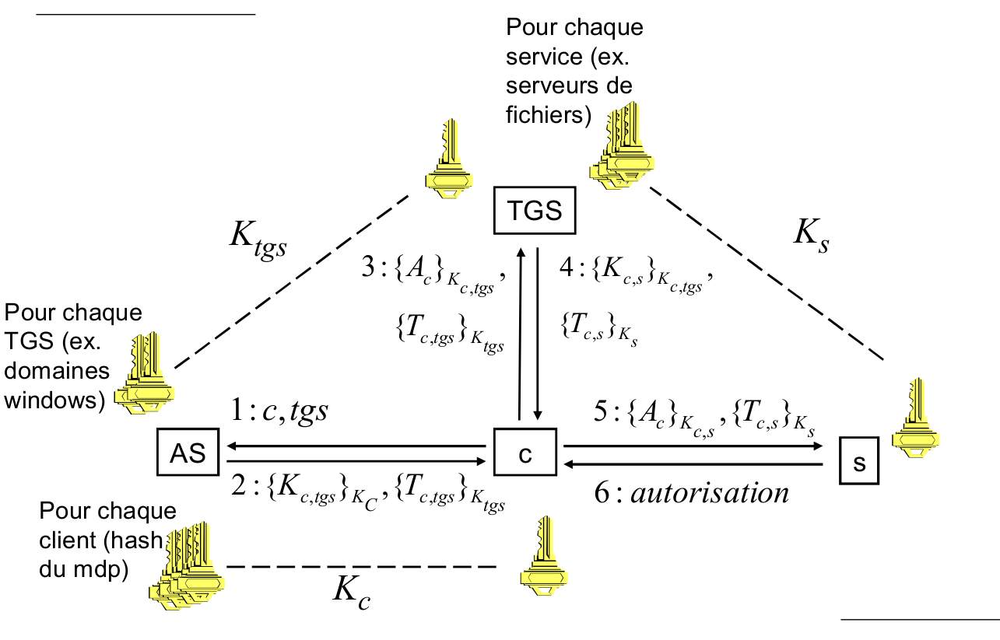
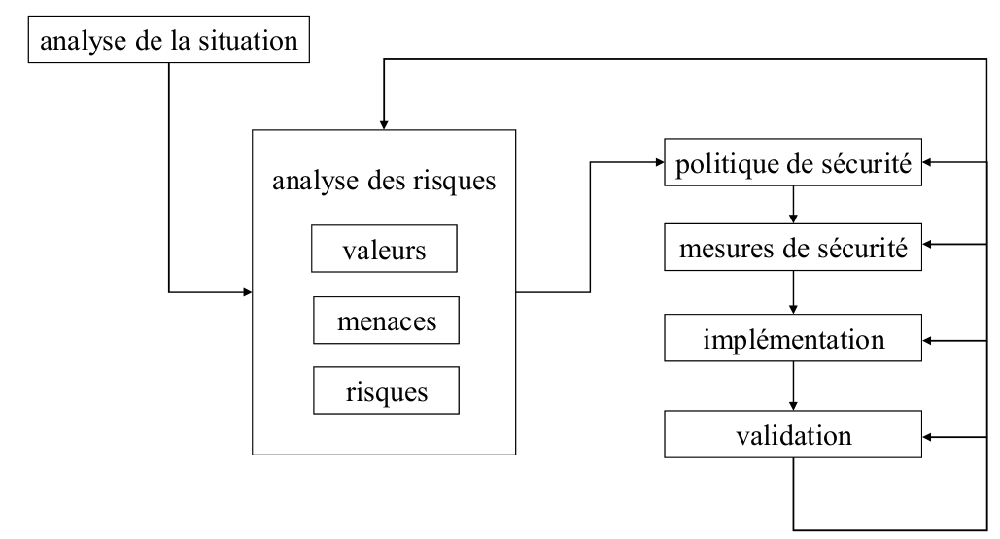
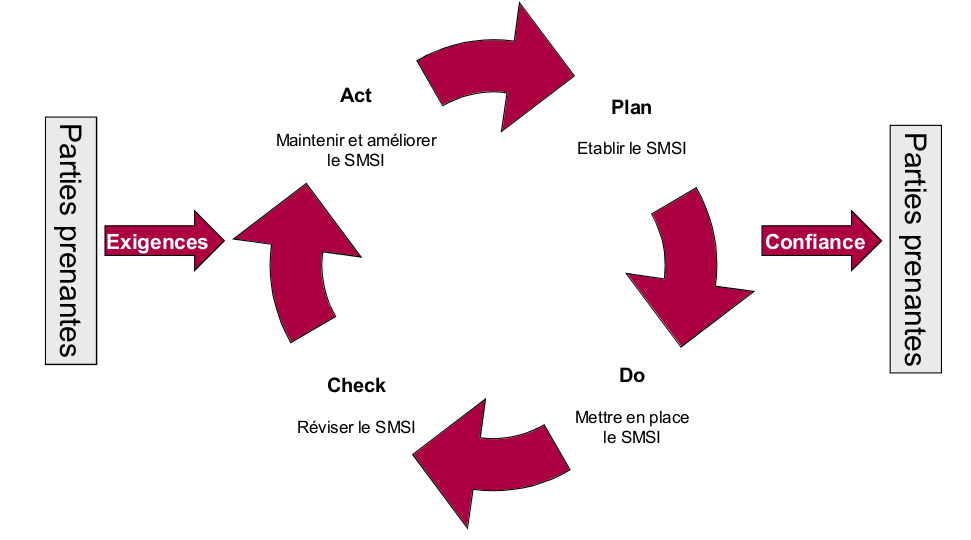

Table of Contents
- 1. Introduction
- 2. Les menaces
- 3. Principes fondamentaux
- 4. Pare-feux
- 5. Proxys
- 6. Antivirus
- 7. Cryptographie
- 8. Mots de passe
- 9. Cassage de mots de passe
- 10. Authentification forte
- 11. Réseaux virtuels privés (VPN) et IPSec
- 12. Transport Layer Security (TLS)
- 13. READ PADDING ORACLE ATTACK
- 14. Secure Shell (SSH)
- 15. WiFi WEP/WPA
- 16. Kerberos
- 17. Gestion de la sécurité
1 Introduction
1.1 Buts
Garantir :
- la confidentialité
- l'intégrité
- la disponibilité des données
1.2 Remarques
- Attaques viennent aussi bien de l'intérieur que de l'extérieur
- Attaques automatiques → cibles arbitraires: tous visés
1.3 Gestion de la sécurité
- Ce ne sont pas les serruriers qui font de la sécurité, mais les architectes
- Approche systématique :
- Analyse de la situation
- Analyse de risques
- Valeurs
- Menaces
- Risques
- Politique de sécurité
- Mesures de sécurité
- Implémentation
- Validation
2 Les menaces
2.1 Messageries
2.1.1 Emails forgés
- Protocole utilisé = SMTP
- N'utilise aucune authentification → très facile de forger des messages
- Emails forgés utilisé pour le spam, phishing et la propagation de rumeur
2.1.1.1 SMTP
- Connection TCP sur le port 25
- Ne connaît que des commandes simples :
- HELO (annonce d'un serveur)
- Mail from:<blabla@blabla.com> (définition expéditeur)
- Rcpt To:<blabla@blabla.com586e75> (définition destinataire)
- data (définition du contenu)
- Parcours du message:
- Déposé dans le serveur SMTP
- Celui-ci le dépose dans un autre serveur plus proche
- Utilise DNS
- A destination, déposé dans la boîte à lettres du destinataire
- Chaque serveur ajoute un entête au message
- Tout serveur SMTP note
- Le commentaire de la commande hello
- l'adresse IP de l'émetteur du message
- L'heure de réception
- ⇒ avec ces infos, souvent possible de retrouver l'auteur
- Possible d'obtenir le même résultat en modifiant les infos du programme de messagerie
- Pour être moins traçable, il faut lancer la connection telnet depuis une machine qui ne tient pas de logs
- Il existe des système de messagerie réellement anonyme basés sur d'autres principes (e.g TOR).
2.1.2 Hameçonnage / phishing
- Falsification d'adresse est utilisée pour le phishing
- On se fait passer pour un expéditeur de confiance pour obtenir des informations
2.1.3 Spam
- Messages non-sollicités, non-ciblés, à très grand tirage
- Adresse de l'émetteur toujours forgée (représailles)
- D'après Spamhaus:
- 90% du mail est du spam
- 80% du spam est dû à une centaine de gangs de 1-5 personnes
2.1.3.1 Techniques de diffusion
- Relais ouverts
- Dégâts
- Serveur abusés sont surchargés
- Disques se remplissent de logs et de messages (risque de blocage)
- bal de l'admin rempli de messages d'erreurs (adresses invalides)
- ISP menace de couper la ligne
- Inclusion dans les listes noires
- Protection
- Pour qu'un serveur smtp ne puisse servir de relais pour des tiers (open relay) il faut configurer deux règles:
- Expéditeur ou destinataire doit être local
- Seules les machines locales ont le droit de spécifier des expéditeurs locaux
- La deuxième règle peut empêcher l'envoi de messages pour des utilisateurs en déplacement ⇒ solution = serveur SMTP demande une identification
- Pour qu'un serveur smtp ne puisse servir de relais pour des tiers (open relay) il faut configurer deux règles:
- Dégâts
- Machines infectées
- Les spammers infectent des machines ⇒ les transforment en spam bots
- Le spammer envoie du spam au travers des serveurs de messagerie de la victime
- Les bots sont groupés en botnet
- Typiquement les bots communiquent avec leur maître en se connectant à un chat
- Abus de messagerie en ligne
- Les spammers ouvrent des comptes dans des messageries en ligne gratuites (protection possible, captchas)
- Avec chaque envoie le nombre max de messages autorisés
2.1.3.2 Protections
- Filtres utilisés pour séprarer les spams de e-mail légitimes
- Basés par exemple sur
- Contenu (mots clés)
- Formats
- Liste noire de messages
- Les filtres ne seront jamais parfait → toujours faux-positifs/faux-négatifs
- Basés par exemple sur
- Liste noires des serveurs
- Ex. SpamHaus, bdd d'adresses
- Utilisé par les serveurs de messageries pour bloquer les spams entrants
- La liste peut être consultée par le DNS
- Idées de solution :
- Coût à chaque messageries
- Preuves que les messages sont émis par des serveurs autorisés
- SPF, serveur enregistré dans le DNS
- DKIM, clé pub du serveur dans DNS + serveurs signent
- Problèmes :
- Solution efficace que si tout le monde y adhère (refus des messages de non-adhérents)
- Spams utilisent déjà SPF ou DKIM
- Solution non technique : peine juridiques lourdes (amende, prison)
2.2 Codes malveillants (virus)
2.2.1 Revenus des codes malveillants
- Transfert d'argent (e-banking)
- Extorsion (chiffrement de fichiers)
- Exploitation de la messagerie pour phishing ou spam
- Mise en réseau (botnet) puis location
- Publicité
- Espionnage
2.2.2 Evolution
2.2.2.1 Epoque classique
- Propagation passive, échange de disquette
- Propagation lente, besoin d'efficacité
2.2.2.2 Epoque moderne
- Propagation active via internet
- Très rapide (infecter la planète en quelques heures)
- Mode de propagation:
- Email (spam) e.g. attachement
- Téléchargement de site web
- Copie sur des partages réseaux
- Copie sur clés USB
- Faille du navigateur/flash player/ outil de messagerie pour s'installer sans aucune intervention de l'utilisateur ⇒ drive-by download
- Souvent simple et facile à détecter
- Efficaces, car se propagent plus vite que les anti-virus ne peuvent être mis à jour
2.2.3 Virus
Fragment qui ne se propage pas par ses propres moyens
2.2.4 Vers
Programme qui se propage de manière autonome
Exemple Stuxnet, ver pour infecter centrales nucléaire iranaise → détruit.
2.2.5 Cheval de troie
Programme utile qui contient un programme malveillant
2.2.6 Backdoor
- Accès caché à un ordinateur, à l'insu de son utilisateur
- Souvent installée par des chevaux de Troie
- Propriétés:
- Plus il est petit, plus il est facile à installer
- Téléchargement d'autres programmes, espionnage réseau, écran, clavier
- Communique soit par TCP/UDP ou encore mieux via un chat/P2P/twitter
2.2.7 Spyware
Logiciel qui transmet des informations privées
2.2.8 Adware
Logiciel qui affiche de la publicité
Superfish
2.2.9 Rootkit
Logiciel qui masque la présence d'intrus
Sony, fichier sys deviennent invisibles…
2.2.10 Rançongiciels et Cryptovirus
- Chiffre les fichier de la victime
- Pour obtenir une clé de déchiffrement la victime doit payer un rançon
2.2.11 Canulars
Infectent le cerveau de l'utilisateur pour se propager :
- Décrivent des menaces importante (suppression de compte Twitter)
- Ne font par référence à des sources fiables
- Demande de les envoyer à tous les contacts de la victime
2.2.12 Polymorphisme
Le virus se modifie à chaque infection de manière à être méconnaissable
- Une partie du virus peut être chiffré avec une clé différente à chaque fois
- Le reste doit être modifié tout en gardant la même fonctionnalité (insertion d'opérations nulles, remplacement équivalents, différents algo)
2.3 Attaques réseau
2.3.1 Ecoute réseau (sniffing)
- Certains protocoles utilisent une authentification en clair (telnet, rsh, ftp, pop, imap, http)
- En visualisant le trafic sur un segment réseau on peut glaner des noms d'utilisateurs et des mots de passes
- Un mot de passe peut donner accès à une machine distante de laquelle on peut sniffer de nouveau mots de passe
- Les réseaux wifi donnent accès à tout le monde au média de transmission, si pas chiffré, facile de sniffer
- Les réseaux cablés limitent les possibilité de sniffer, mais les switchs peuvent être manipuler (cf. ARP poisonning)
2.3.2 Session Hijacking
- Au lieu de voler un mot de passe, le pirate peut attendre qu'un utilisateur s'authentifie puis lui voler sas session
- Exemple TCP :
- Si un pirate peut espionner une connexion TCP, il peut insérer un paquet TCP
- Il doit forger les adresses sources et destination, les ports et les numéros de séquences
- Si le trafic légitime n'est pas bloqué, le paquet inséré va désynchroniser la connexion
- La source, qui n'a pas émis le paquet, n'est pas d'accord avec le numéro de séquence acquitté et émet un acquittement
- La destination, qui a vu le paquet inséré, n'est pas d'accord avec le numéro de séquence et envoie un acquittement
2.3.3 Usurpation d'identité (spoofing)
En modifiant la configuration de son ordinateur ou en créant des paquets de toute pièces il est possible de forger l'adresse source (MAC ou IP) pour se faire passer pour qqn d'autre
2.3.3.1 Usurpation de MAC
- On peut facilement changer l'adresse MAC de sa carte réseau câblée ou WiFi
- Certains routeurs WiFi permettent de filtrer les clients d'après leur adresses MAC
- Certaines entreprises n'acceptent que des machines qui ont des adresses MAC répertoriée
- Facile de changer pour que son adresse MAC en fasse partie…
2.3.3.2 Usurpation d'IP
- Dans certains cas, IP source est utilisée pour autoriser une communication
- Routeurs et firewall peuvent filtrer paquets en fonction de leurs sources
- Certains programmes peuvent autoriser certaines sources à se connecter sans authentification
- Facile de forger la source d'un paquet IP et d'usurper la confiance faite à cette source
- La réponse à un message forgé est envoyée à l'adresse usurpée
- Facile à appliquer sur des protocoles basés sur UDP
2.3.3.3 Usurpation IP avec TCP
- TCP utilise des numéros de séquences pour suivre les données envoyées et reçues
- Pour éviter de réutiliser les mêmes numéros de séquence, un numéro de séquence initial aléatoire (ISN) est choisi à chaque nouvelle connection
- Rappel TCP:
- A => B syn ISN.A
- B => A syn ISN.B ack ISN.A+1
- A => B data ISN.A+1, ack ISN.B+1
- Difficultés
- A envoie ses paquets à B avec une adresse source C ⇒ A doit deviner l'ISN que B va proposer à C
- C Envoie un reset à B (vu qu'il n'avait pas demander d'ouvrir une connection TCP)
- Avant on pouvait deviner l'incrément facilement, procédé du pirate :
- Il bloque les connections de C vers B
- Il ouvre quelques connections réelles (e.g. SMTP) pour obtenir un ISN actuel et des échantillons d'incréments
- Il lance sa connexion forgée en utilisant le dernier ISN plus un incrément déduit de ces échantillons
- Il peut lancer une multitude de connexions forgées avec des incréments variés en espérant avoir juste au moins une fois.

2.3.4 Détournement de connexions
- Plutôt que d'utiliser l'adresse d'une autre machine, on peut convaincre la victime que c'est chez nous qu'elle doit se connecter
- Permet à l'attaquant:
- Se faire passer pour le serveur auquel la victime voulait se connecter
- Se faire passer pour son routeur et récupérer tout le trafic de la victime.
2.3.4.1 ARP
- ARP: address resolution protocl ⇒ sert à trouver l'adresse couche 2 (ethernet) d'une adresse de couche 3 (IP)
- Très simple et non sécurisé ⇒ client pose question, n'importe qui peut répondre
- Facile de forger des réponses (même non sollicitées) pour rediriger le trafic
- Typiquement on se fait passer pour le routeur par défaut et on peut écouter tout le traffic
2.3.4.2 Cache NDP
- équivalent de l'ARP pour IPv6
- Peut-être manipulé de la même manière
2.3.4.3 Empoisonnement du DNS
- Requête de nom de domaine vers IP
- Requête contient un identifiant de 16 bits et provient d'un port aléatoire
- Si on arrive à deviner ou à observer ces deux éléments on peut forger une réponse et rediriger une victime vers une fausse adresse
- Une seule réponse forgée peut suffire à tromper un serveur DNS intermédiaire qui va la garder dans son cache (DNS cache poisonning)
2.3.5 Dénis de service
- Denial of Service (DoS)
- Distributed Denial of Service (DDoS)
- les système informatiques sont si complexes qu'il est facile de les gripper
- Un bon DDoS doit rester anonyme
- Passer par plusieurs couches intermédiaire
- A l'aide d'un virus/ver autonome
2.3.5.1 Syn flooding
- On envoie une grande quantité de paquets syn faisant croire qu'on veut établir des nouvelles connexions
- Quand un serveur reçoit un paquet syn, il alloue de la mémoire et d'autres ressources et enregistre la connexion dans une queue de connexions mi-ouvertes
- Si le serveur ne gère pas bien cette situation, il ne sera plus capable d'accepter de nouvelles connexions
- Le pirate ne désire pas vraiment établir des connexions, peut forger IP source pour rester anonyme
- La plupart des OS sont protégés contre ces attaques: Avant 16 connexion = overflow, maintenant un synflood ne bloque plus, mais consomme des ressources.
2.3.5.2 Attaques par réflexion
- Noyer la cible à l'aide d'amplificateur de trafic
- Cas typique: ICMP echo-request (ping)
- Pirate envoie paquet ping avec l'adresse cible comme source
- Machine "pingée" envoie réponse à la cible
- Si le pirate envoie le paquet à une adresse broadcast, ce sont toutes les machines du réseaux qui vont répondre à la cible
2.3.5.3 DDoS
- Pour gagner en puissance, pirate compromettent une série de machines en installent des agents (bots)
- Les agents communiquent avec un maître par une ou deux couches intermédiaires
- Le but est typiquement d'extorquer de l'argent de sites qui font du commerce en ligne
- Bande passante ++
- Plus difficile de remonter à l'attaquant
- Attaque vient de plusieurs sources, plus difficile à filtrer
2.4 Applications
2.4.1 Interactions peu sûres entre composants
- Exemple: injection de commande systèmes.
- Paramètre hostname utilisé lors de l'utilisation de commande système
- Peut contenir mauvais code: hostname="www.test.com; rm -rf *"
2.4.2 Gestion des ressources risquées
- E.g. buffer overflow
- Si un programme ne vérifie pas la quantité de données qu'il reçoit, il risque d'écraser une zone mémoire qui contient des variable, du code ou des adresses de saut
- En connaissant bien l'architecture de la machine on peut fournir du code machine qui sera exécuté.
2.4.3 La pile
- Sert a stocker des info temporairement
- Retire les info dans l'ordre inverse d'ajout.
- Lors d'un appel à une procédure, adresse de retour déposé dans la pile + args
- Variable local de la procédure aussi sur la pile
- Zone mémoire réservée pour la pile (trame)
- Pointeur de trame indique ou commence la trame active sur la pile
- Lors d'un appel à une procédure, pointeur de la trame aussi déposé sur la trame avant d'être remplacé
- Pile croît de haut en bas
- Bas de la mémoire = réservé pour le programme
2.4.4 Débordement de tampon
- On dépasse l'adresse de retour et une partie de la pile
- La pile peut être écrasée avec un fragment de programme
- l'adresse de retour peut pointer sur ce fragment
- à la fin de la procédure:
- La trame est retirée de la pile
- le pointeur de trame précédant est retiré
- l'adresse de retour est retirée
- L'exécution continue à l'adresse de retour
- Si adr pointe sur le début du programme, l'exécute.
2.4.4.1 Difficultés:
- Difficile de deviner l'avancement de la pile et de choisir l'adresse
- La programme n'a pas le droit de contenir le caractère spéciale "\0" qui termine les chaîne de caractères et donc le débordement de mémoire.
2.4.4.2 Protection:
- Canari:
- On écrit une valeur secrète sur la pile juste avant l'adresse de retour
- Avant de sauter à l'adresse de retour, on vérifie que la canari à la même valeur
- Address Space Layout Randomization (ASLR)
- On charge le code à une adresse différente à chaque exécution
- Le pirate ne sait pas à quelle adresse se trouve le code qu'il a injecté ou les routines qu'il veut appeler
- Mémoire non-exécutable
- On marque les zones de mémoire contenant du code comme non modifiables et les zones modifiables comme non exécutables
- Si le pirate arrive à injecter du code, il ne sera pas exécutable
- Soit on peut écrire, soit on peut exécuter.
2.5 Vulnerabilités Webs
- Site web contiennent des formulaires pour interagir avec le site
- BDD
- URL peut donner infos
2.5.1 Cross-Site Scripting
Contexte de la page web
- Si les paramêtres fournis par l'utilisateur ne sont pas vérifiés ⇒ peuvent contenir script
- Possibilité de charger des scripts distant
- Consiste à injecter du code js dans une page
- Souvent le script se trouve sur au autre site
2.5.1.1 Dangers
- Redirection de session (par exemple sur une copie du site original)
- Affichage de formulaire pour récupérer des infos utilisateur
- Exécution d'actions (clicks) à la place de l'utilisateur (propagation de vers)
- Vol du cookie de session (session hijacking) ⇒ si le pirate y arrive, peut accéder à la session de l'utilisateur authentifié
2.5.2 SQL injection
Quand une requête SQL est crée depuis des données fournies par l'utilisateur, peut introduire des commandes (e.g. list all passwords…
2.5.3 Références directe
Exemple: afficher solde d'un compte : http://www.com/afficher_solde?compte=12901
- Il faut se méfier des paramêtres fournis par l'utilisateur
- Il ne faut pas lui permettre de faire des références directes
2.5.4 Code mobile
2.5.4.1 Applets Java
- Applets java = petit programme téléchargés et éxécuté par les navigateurs
- applets précompilées en bytecode (universel)
- Interprété avec la JVM
- "Bac à sable" JVM limite strictement les op que l'applet poeut éxécuter
- Limitations sécurité paramétrables
- Applet peut demander à sortir du bac à sable, utilisateur doit être d'accord
- Problème : failles régulièrement découverte dans la JVM ⇒ permet à l'applet de sortir du bac à sable, ou bytecode malformé pour faire un buffer overflow
- Utilisateur imprudent peuvent baisser le niveau de sécurité par défaut.
- Protection:
- scanner qui savent reconnaître signatures d'applet malicieuses
- Proxys peuvent bloquer applet par signée par tiers digne de confiance
- Navigateur de + en + prudents et demande à l'utilisateur de confirmer exécution.
2.5.4.2 ActiveX
- Code mobile compilé, développé par MS pour windows
- Modèle de sécurité
- Les objets ActiveX tourne directement sur la machine (pas de bac à sable)
- Objets peuvent être signés pour certifier qu'ils peuvent être utilisés sans risque
- Risques
- éditeur peut se tromper et signer objet ActiveX dangereux
- Utilisateurs imprudents peuvent désactiver la confirmation requise pour des objets non-signés
- Protection
- Scanner pour vérifier signatures ⇒ éliminent non-signés + ceux connus comme vulnérable
- MS met liste noire à jour. Pas exécuté sur app windows ⇒ dans le registre
2.5.4.3 Autres
- D'autres applications veulent s'exécuter dans le navigateur (flash, pdf, silverlight), interprétée par plugin adéquat ⇒ problème si faille dedans… suffit de visiter un site pour qu'un attaquant puisse exécuter du code…
3 Principes fondamentaux
3.1 Moindre privilège
Donner le minimum de privilège nécessaire à chaque élément d'un système (utilisateur/logiciel) pour qu'il puisse accomplir sa tâche.
3.2 Défense en profondeur
- Plusieurs mesures de sécurité = mieux qu'une
- Eviter que la sécurité ne dépende que d'une mesure
E.G. antivirus sur messagerie + poste de travail, protège (configuration,patchs) machines protégées derrière un firewall
3.3 Simplicité
- Plupart des problème viennent d'une erreur humaine
- Dans un système simple : risque d'erreur plus petit, plus facile de tester bon fonctionnement
3.4 Participation des utilisateurs
- Système de protection efficace que si les utilisateurs le supportent
- But du firewall = autoriser tout ce qui est utile en évitant les dangers
- Système trop restrictif pousse les utilisateurs à devenir créatifs…
- Bien connaître les besoins des utilisateurs + bien communiquer les raisons des restrictions
3.5 Goulot d'étranglement
Plus facile de contrôler la sécurité si toutes les données passent par un même point:
- Interdiction d'utiliser des modems/hotspots dans le réseau de l'entreprise
- Interconnexions avec d'autres entreprises (ex. maintenance) doivent aussi passer par le firewall
- Attion: firewall devient élément critique, mettre en place de la redondance
3.6 Interdiction par défaut
Mieux d'interdire tout ce qui n'est pas explicitement permis que de permettre tout ce qui n'est pas explicitement permis (principe de la whitelist)
- On ne connaît jamais à l'avance toutes les menaces que l'on va subir
- Si on fait un oubli, il veut mieux interdire qqch que d'autoriser une attaques
3.7 La maillon le plus faible
Firewall aussi sûr que son maillon le plus faible:
- Penser à sécuriser tous les aspects du réseau
- Ne pas investir beaucoup sur un aspect tant que les autres ne sont pas bien couverts
- Ex. Investir même effor sur le filtrage de virus dans le traffic http que dans le trafic smtp
4 Pare-feux
- Pare-feux empêche la propagation d'un incendie
- Pare-feux dovient empêcher la propagation d'une attaque tout en laissant passer le traffic utile
- Pare-feux peut être constitué d'un ou plusieurs éléments
4.1 Filtrage
- Fonction principale du pare-feux
- Sert à limiter le trafic au services utiles
- IL peut se faire sur de multiples critères
- Adresses IP src et dst
- Protocoles (TCP,UDP,ICMP,…) et ports
- Le filtrage des adresses sources permet d'éviter le IP spoofing
- Le filtrage des flags TCP permet de définir le sens dans lequel les connexions peuvent être établies
4.2 Types de pare-feux
- Sans état (stateless) ⇒ ne se rapelle pas des paquets qu'il a déjà vu
- A état (stateful)
- Garde une trace des paquets qui passent
- Reconstruit l'état de chaque connexion voire des certains protocoles
- Logiciel ⇒ ordinateur standards avec logiciel pare-feu
- Matériel ⇒ boîte noire spécialisée (qui contient aussi du logiciel)
- Virtuel ⇒ machine virtuelle, e.g. pour VmWare
4.2.1 Par-feux à état: TCP
- Pour chaque connexion il sait à quoi doit ressembler le prochain paquet (flags, nums de séquence)
- Il peut éliminer les paquets qui ne correspondent pas Il peut remplacer les numéros de séquence (évite la prédiciton des numéros de séquences initiaux)
- Il peut empêcher le syn-flooding
4.2.2 Logiciel vs matériel
- Pare-feux logiciels héritent de toutes les vulnérabilité de l'OS sur lequel ils tournent
- Architecture des pare-feux logiciels étant très bien connue, plus facile d'exploiter des vulnérabilités (e.g buffer overflow)
- Perfomances des pare-feux logiciels sont souvent meilleurs (ils profitent des avancées des PC grand public)
4.2.3 Pare-feu applicatif
- Spécialisé pour un type d'application (Web, SMTP)
- Connaît les commandes et les formats de l'application ⇒ permet de bloquer les requêts dangereuses (injection SQL, XCSS)
4.2.4 Pare-feu personnel
- S'intalle sur un poste de travail
- Surveille le trafic reçu et généré par les applications actives sur le poste de travail
- Demande à l'utilisateur de confirmer que telle application à le droit de recevoir/émettre sur tel port (e.g flash demande à se connecter à un site web, permet de bloquer les codes malveillants)
- Tous les OS récents ont un pare-feu personnel installé par défaut qui bloque au minimum tout le traffic entrant
4.3 Translation d'adresses (NAT)
- Adresses IP publiques = limitées (en nombre)
- Au lieu de réserver 256 adreses pour 100 postes, on peut les "cacher" derrière une seule adresse
- Plage résérvées pour:
- 10.0.0.0 - 10.255.255.255
- 172.16.0.0 - 172.32.255.255
- 192.168.0.0 - 192.168.255.255
4.3.1 Fonctionnement
- On utilise des adresses privées dans le réseau interne et une/des adresses publique pour communiquer avec internet
- Quand un paquet sort du réseau privé, on remplace son adresse de source par une adrese publique
- Quand un paquet arrive d'Internet, on remplace la destination publique par une adresse privée
- On utilise un table de translation pour trouver la destination privée
4.3.2 NAT dynamique
- Initialement la table de translation est vide
- Quand paquet sort, on remplace l'adresse source par une IP publique
- On note les adresses et ports source et destination internes et externes
- Quand une réponse à un paquet arrive depuis Internet, on cherche la source externe qui correspond à la destination du paquet
- On remplace la destination par la source interne1
4.3.2.1 Propriétés
- Collision quand deux connexions ne sont différentes que par l'adresse interne
- On peut utiliser un pool d'adresses publiques et utiliser des adresses sources différentes
- On peut changer le port source (Port and Address Translation PAT)
- Le NAT dynamique ne permet pas l'établissement de connexions entrantes (bonne protection par défaut)
4.3.3 NAT statique
- Pour permettre des connexions entrantes, on définit des entrées statiques dans la table de translation
- Typiquement on crée une entrée par protocole (SMTP, HTTP)
- Les différents ports d'une même adresse externe peuvent aboutir sur différentes adresses internes.
4.3.4 Inconvénients
- Certaines protocoles échangent leurs adresses IP
- Avec du NAT, c'est l'adresse privée qui sera fournie
- Si le FW connaît le protocole, il peut "patcher" les paquets pour remplacer l'adresse privée par l'adresse publique
- E.g. FTP, P2P, jeux, X windows
- Certains protocoles ne supportent pas de modifications des paquets (e.g. IPSec)
4.3.5 Avantages
- Moins d'adresses publiques, coûts limités
- Facilité pour changer de fournisseur d'accès
- Facilité pour réorganiser le réseau interne
- Effet automatique de protection (cf. NAT statique)
- Dissimule la structure interne du réseau
4.4 Fonctionnalités supplémentaires
- Authentification
- Accès à distance, chiffrement (VPN)
- Inspection des paquets (Intrusion Detection System IDS)
- Génération de logs
4.5 Protection contre le syn-flooding
- Simple:
- Le FW surveille les tentatives d'ouverture de connexion qu'il voit passer
- S'il constate qu'une connexion reste à demi-ouverte trop longtemps, il envoie un RST au serveur
- Avancé
- Le FW temporise les paquets syn et génère lui-même un syn-ack
- C'est seulement s'il reçoit un ack qu'il envoie le syn original
- La FW génère à la place de B un ISN, passe le reste de la connexion à ajuster les numéros de séquences
4.6 Architecture de pare-feux
4.6.1 NAT + filtrage
- Configuration
- NAT dynamique pour les machines internes
- NAT statiques pour les serveurs accessibles
- Filtrage sortant (trafic utile)
- Filtrage entrant (blocage de l'accès au firewall)
- Limitations
- Pas d'analyse de contenus (virus) depuis internet
- Connexions directe sur les serveurs internes (exploits, DoS)
- Application : sécurité basse, pas de serveur web grand public
4.6.2 Zone démilitarisée (DMZ)
4.6.2.1 Exemple 1
CF. slides 196-197
- DMZ ni connectée à internet, ni au réseau interne ⇒ permet de contenir les attaques
- Configuration
- Machines internes ne peuvent se connecter qu'au proxy
- Seul le proxy peut se connecter à internet
- NAT dynamqiue sortant, statique entrant
- Filtrage sortant (trafic utile), filtrage entrant (blocage de l'accès au firewall)
- Limitations (de l'exemple particulier, cf. image)
- FW point critique
- TOus les services passent par le même proxy, une vulnérabilité sur un seul service donne accès à tout le trafic
- Application : sécurité moyenne
4.6.2.2 DMZ en sandwich
cf. slide 198
- Configuration
- Machines internes ne peuvent se connecter qu'aux proxys (un protocole par proxy)
- Seul les proxys peut se connecter à internet
- PAs de routage dans les proxys
- NAT dynamqiue sortant, statique entrant
- Filtrage sortant (trafic utile), filtrage entrant (blocage de l'accès au firewall)
- Application : sécurité élevée
4.7 Règles de filtrage
- Règles de filtrages spécifiées dans une liste
- FW parcourt la liste pour voir si règle s'applique
- FW exécute action spécifiée par la règle puis passe au paquet suivant
- Dernière règle pour interdire toute ce qui n'a pas été autorisé
- cf. slides 206-207
4.7.1 Organisation
- Ordre = important
- Quand bcp de règle, il est important de les organiser systématiquement
4.7.1.1 Méthode
- Niveau de sécurité pour chaque zone
- On groupe les règles par zone dans l'ordre décroissant du niveau de sécurité
- Chaque groupe est fait de 4 parties:
- Autorisations explicites du trafic en entrée
- Interdiciton générale de trafic en entrée
- Autorisations explicites du trafic en sortie
- Interdiciton générale de trafic en sortie
4.7.1.2 Propriétés
- Pour chaque zone il suffit de déclarer les flux vers les zones moins sécurisées
- Les flux vers des zones plus sécurisées ne peuvent plus être influencée (but de l'opération): "any" se réfère aux niveaux suivants
- Une règle qui implique 2 zones doit apparaître dans le bloc de la zone la pluc sécurisées
- le bloc de la dernière zone est vide
- La dernière règle (any-any) ne devrait pas être nécessaire, En activant les logs sur celle-ci on peut découvrir d'éventuelles erreurs.
4.8 Détection d'intrusion (IDS)
- Protéger bien, surveiller + défendre = mieux
- Réagir avant l'attaque
- Systèmes de détection d'intrusion (IDS) analysent
- Trafic sur le réseau (Network IDS, NIDS) typiquement devant le FW
- les événements sur le serveur (Host IDS, HIDS)
- En cas d'attaque ils lancent une alarme (SMS, mail) et peuvent reconfigurer le FW (filtrage de l'attaquant) ou les serveurs
- Analyse soit en temps réel ou en analysant les logs
| Réseau (NIDS) | Machine (HIDS) | |
|---|---|---|
| Analyse a posteriori | Analyse des logs et configuration de FW, routeurs | Analyse de logs systèmes |
| temps réel | Snifer réseau | Surveillance des évenements |
4.8.1 IDS à caractérisation du trafic
- IDS qui fait des statistiques du trafic
- Si une valeur est hors normes, il doit s'agir d'une attaque
- Ce système peut reconnaître des attaques nouvelles
- Ou ne pas les reconnaître…
- Voit des attaques où il n'y en a pas (faux positif) ⇒ utilité réduite…
4.8.2 IDS à signature
- l'IDS a une base de donnée des attaques connues (e.g. requête web avec 2000 caractères = buffer overflow)
- Il ne reconnaît pas les attaques nouvelles ⇒ besoin d'être constamment mis à jour
- Faux négatifs: attaques manuelles avec des variations non détectées
- Faux positifs: signatures pas toujours précises + IDS ne sait pas si la cible est vulnérable (e.g. attaque linux sur serveur Win)
4.8.3 HIDS avancés
Certains éditeurs proposent des HIDS qui combinent plusieurs fonctionnalités
- Contrôle d'accès à des fichiers ou des fonctions du système
- Contrôle des applications qui peuvent accéder au réseau
- Contrôle des communications entre applications
- Liste blanche ou noir des app qui peuvent être exécutées
- Contrôle des périphériques (clés USB, graveurs, etc.)
4.8.4 Efficacité
cf. slide 228
4.8.5 Discussion
- IDS à signature fonctionnent bien mais:
- La majeur partie des attaques dont on a la signature peuvent être bloquées par le FW ou les proxys
- Il faut d'abord faire l'effort d'empêcher avant de faire l'effort de détecter
- Il ne suffit pas d'installer un IDS, il faut ensuite savoir réagir aux attaques et traiter quotidienement les faux positifs
- Les réactions automatiques ne sont pas conseillées car elles peuvet mener à des DoS (ex. spoofing)
- Quand on peut se permettre les deux, c'est une bonne défense en profondeur
- Les IDS déployés dans les réseaux internes donnent des alarmes moins fréquentes et plus critiques
5 Proxys
- Proxys = relais d'applications
- Ils jouent le rôle de serveur pour le client et de client pour le serveurs
- Ils peuvent analyser les données dans le contexte de l'application et filtrer si nécessaire (contenu, virus, exploits)
- Ils permettent d'éviter des connexions directes depuis un réseau interne vers internet
- Ils sont un exemple typique des principes de la défense en profondeur et du goulet d'étranglement
- Ils aggissent dans la couche applications
- Les filtres (même à mémoire) agissent dans les couches inférieures
5.1 Proxy HTTP
- Protocole HTTP = simple, on se connecte directement au serveur et on fait un GET du doc (GET /index.en.html)
- Pour passer par un proxy, le protocole doit être modifié, on doit configurer le browser : connection au proxy, puis demande au proxy page + doc (GET http://www.epfl.ch/index.en.html)
5.1.1 Cache
- Le proxy peut garder un copie locale de tous les documents qu'il a été cherché
- Quand un deuxième client demande le même doc, il peut fournir la copie locale
- Le transfert est beaucoup plus rapide (augmentation du confort)
- On peut économiser de la bande passante (limitation des coûts)
5.1.1.1 Fraîcheur des docs
- Avant de fournir la copie du doc, le cache doit s'assurer que l'original n'a pas changé
- Pour cela il ajoute le paramètre "if modified since:…" à sa requête
- Si le doc n'a pas changé, le serveur répond "not modified", sinon il fourni le doc
- Si le doc est pourvu d'une date de péremption et qu'elle est encore valide, la cache n'a pas besoin de contacter le serveur
5.1.2 Filtrage parental
- Le proxy peut servir à interdire l'accès à des pages webs en fonctions de leurs contenu
- Pour cela il utilise une liste d'URLs par catégorie (NSFW, jeux, chats, recherche d'emploi, sport,…)
- Pour mettre la liste à jour, il faut s'abonner à un service
- Limitations
- Les lis comportent des erreurs, les faux positifs empêchent les gens de travailler
- Il y a des moyens de contourner les filtres
5.1.3 Proxy transparent
- Pour ne pas avoir à configurer les navigateurs on peut utiliser des proxys transparents
- Dans ce cas, le trafic destiné à un certain port est automatiquement détourné vers le proxy par le FW
- Limitation: ça ne marche pas pour des serveurs web qui n'utilisent pas le port standard
- Utilité: forcer l'utilisation d'un proxy e.g. dans un hotspot d'une entreprise
5.2 Proxy FTP
5.2.1 FTP
- FTP utilise une connexion de contrôle et des connexions de données
- Les connexions de données peuvent être dirigées vers le client (mode actif, défaut) ou vers le serveur (mode passif)
- Le sens de la connexion de données est indépendantes du sens de transfert des fichiers
- Le protocole FTP ne connaît pas la notion de proxy (pas moyen de spécifier un serveur tiers)
5.2.2 Proxy FTP par HTTP
- Les navigateurs peuvent utiliser des URLs du type : ftp://monserveur.ch/a.txt
- Si le navigateur est configuré pour utiliser un proxy HTTP, il va demander cette URL au proxy
- C'est le proxy qui va faire le transfert FTP et fournir le document dans la réponse HTTP
5.2.3 Proxy FTP user@
- Le serveur user@ se comporte comme un serveur FTP (peuvent être utilisés par n'importe quel client FTP)
- Pour atteindre le serveur distant BOB en utilisation le username Joe, on donne Joe@BOB comme username au proxy
- Celui-ci se connecte au serveur et relaie le mdp, les commandes et les datas
- Le proxy peut travailler en mode passif avec le serveur, même si le client se connecte en mode actif au proxy.
5.3 Proxy SMTP
- SMTP est conçu à la base pour transporter du courrier par étape
- Tout serveur SMTP complet peut donc agir comme proxy
- En sortie (sens direct), il suffit de configurer les clients pour déposer le courrier dans le proxy plutôt que dans les serveurs distants
- En entrée (sens inverse), il faut déclarer le proxy dans le DNS et lui indiquer le serveur interne qui doit recevoir le courrier.
5.4 Proxy DNS
- Protocole DNS est conçu pour relayer les requêtes
- Un serveur DNS peut servir comme proxy
- Les serveurs DNS ont un cache pour limiter le trafic et réduire les temps de réponses
- Il peut être judicieux de configuer un serveur DNS proxy pour toujours diriger ses requêtes vers un plus grand serveur (e.g ISP ou Google) afin de profiter d'un plus grand cache
5.5 Proxy Socks
- Le proxy socks (Socket Server) est un proxy général de connexions TCP et UDP
- Il accepte une connexion du client et ouvre une autre connexion vers le serveur
- Il transvase ensuite les données entre les deux connexions
- Avantage: Socks permet de faire passer n'importe quel protocole par un proxy
- Limitation: Socks permet de faire passer n'importe quel protocole par un proxy
5.5.1 Implémentation
- Au lieu d'ouvrir directement une connexion distante, on ouvre une connexion vers le proxy et on lui indique l'adresse distante
- Le proxy fait la connexion distante, confirme et devient transparent.
- Il suffit parfois de modifier la pile de protocole d'une machine pour qu'elle utilise automatiquement Socks
- Parfois il faut modifier (socksifier) les programmes. Des outils automatiques permettent de patcher le code source pour utiliser socks (socksification)
5.6 Proxy HTTPS
- HTTPS = version sécurisée (chiffrement, authentification) de HTTP
- Proxy HTTPS ne sont PAS une version sécurisée des proxy HTTP!
- HTTPS chiffre en authentifie de bout en bout. Si c'est le proxy qui fait la connexion, on perd tous les avantages.
- Le proxy HTTPS se contente donc de relayer de manière transparente les données entre une connexion client et une connexion serveur (comme un socks)
5.6.1 Implémentation
- Le proxy HTTPS connaît la commande HTTP connect qui lui indique l'adresse du serveurs
- Il répond par un statut et devient transparent
5.6.2 Problèmes de sécurité
- Le proxy HTTPS permet de relayer n'importe quel protocole (il est transparent
comme Socks)
- Pour limiter les abus, les ports disponibles sont souvent limités à 443 (HTTPS) et 563 (SNEWS)
- Pour permettre à un protocole quelconque de traverser un firewall, il suffit de faire tourner le serveur sur le port 443 et passer par un proxy HTTPS
- Le proxy ne voit que du contenu chiffré ⇒ ne peut pas faire de filtrage de contenu
5.7 Proxy inverse
- En sens direct, le client sait qu'il doit passer par un proxy, il peut adapater ses requêtes en conséquences
- En sens inverse, le client ne sait pas s'il parle à un serveur ou à un proxy
- Le proxy doit agir de manière identique à un serveur
- pour les protocoles qui ne connaissent pas les relais (HTTP, FTP) le proxy inverse ne peut agir comme proxy que pour un seul serveur
5.7.1 Proxy inverse HTTP
- Les proxys inverses HTTP permettent:
- De filtrer les requêtes (blocage d'exploit)
- D'authentifier les clients avant même qu'ils ne parlent au serveurs
- D'accélérer les serveurs
- Accélérateurs de serveurs
- Les proxys inverse fonctionnent comme cache
- C'est le proxy qui fournit les documents statiques, le serveur n'a plus qu'à gérer les docuements dynamqiues
5.7.2 Proxy inverse HTTPS
- Les proxys HTTPS servent d'accélérateurs de chiffrement
- Ils peuvent décharger le serveur en s'occupant du chiffrement et de l'authentificaiton
- La connexion entre le proxy et le serveur est alors du HTTP et non du HTTPS
6 Antivirus
6.1 Détection de virus
- Analys de code
- Analyse statique du code ⇒ difficile si le code est compressé ou chiffré
- Analyse dynamique du code (exécution virtuelle) ⇒ le code peut détecter qu'il est exécuté et changer son comportement
- Par signature ⇒ utilisation d'une bdd de signatures
- Combinaisons ⇒ exécution virtuelle, puis recherche de signature dans la code décompressé/chiffré
- Limites de l'analyse de code:
- Peu efficace
- Méthode heuristiques (approximative) que utilisées en conjonction avec signature
- Halting problem avec virus (V(x) sait si x est un virus, P(x): si v(x) exit, sinon spread, on exécute P(P) ⇒ ne peut être ni vrai ni faux…)
6.2 Protection complète anti-virus
- Protection anti-virus est un cas classique du principe de la défense en profondeur
- Les produits anti-virus doivent être déployés à tous les niveaux du réseau
- Ils doivent se mettre à jour et être contrôlés automatiquement
6.2.1 Desktop
- Tous les desktops doivent être protégés par un anti-virus
- Mise à jour auto ⇒ initié par le desktop (push/pull) ou heure donnée
- Console centralisée doit surveiller la mise à jour
- Problèmes:
- Interférence des utilisateurs
- Laptop en ballade
- Desktop éteints, machines virtuelles arrêtées
- PC non contrôlés (tests, labos, nouvelles machines)
- Il reste toujours des machines non protégées
6.2.2 Serveurs de fichiers
- Les serveurs de fichiers contiennent les fichiers de multiples utilisateurs, infection peut être particulièrement grave
- Les serveurs sont plus simples à gérer (pas d'interférence utilisateur + 7/24)
- Scanner tous les fichiers à l'écriture (moins lourd que de toute scanner à chaque lecture)
- Mise à jour automatique quotidiene à heure fixe
- Analyse des logs automatiques pour générer des alarmes
6.2.3 Serveurs de messageries
- Les messages sont analysés avant d'être déposé dans la boîte à lettre du destinataire.
- Le logiciel anti-virus doit savoir traiter toutes les formes d'attachements (zip, tar, rar imbriqués)
- Le logiciel anti-virus élimine les virus détectés et avertit l'expéditeur, le destinataire et un admin par un e-mail
- L'expéditeur peut être mis sur une black list
- Mise à jour quotidiene de l'anti-virus
- Mise à jour régulière du logiciel de messagerie
6.2.4 Passerelles internet
6.2.4.1 Proxy mail
- Proxy mail isole les serveurs de messageries de l'Internet
- Les attaques (mass mailing, DoS) aboutissent sur la passerelle et non sur les serveurs internes
- Le proxy est sous la responsabilité d'une seule équipe
- Interception des virus avant même qu'ils ne pénetrent le réseau interne
- Maintenance 7/24
- Nombre réduit = facilité de màj
6.2.4.2 Proxys Web
- On peut télécharger des logiciels potentiellement infectés par le Web
- On peut aussi recevoir du courrier électronique par le Web (gmail)
- Des pages web peuvent contenir des virus (drive-by download)
- Les proxys Web analysent tous les documents accédés et éliminent les virus détectés
6.2.5 Filtre générique
- Un filtre générique permet de bloquer de nouveaux virus avant même que le logiciel anti-virus ne soit mis à jour
- Un filtre générique permet d'interdire les attachements qui ne sont pas utiles (.exe,.pif,.vbs,.scr,shs,.bat)
- Principe de l'interdiction par défaut: on peut tout interdire par défaut et spécifier les attachements autorisés (pdf sans scripts, ms-office sans macros, gif, jpeg, txt)
- Le filtre doit être installé sur les passerelles mail, web, ftp.
7 Cryptographie
7.1 Chiffrement symétrique
- Chiffrement à clé secrète
- Chiffre souvent les données par bloc
- Manière dont on combine les blocs = mode de chiffrement
- Mode le plus simple = ECB, chaque bloc est chiffé indépendamment avec la même clé
- Mode de chiffrement les plus avancé combinent les données d'un nouveau bloc avec celle des autres blocs (E.g CBC, Cipher Bloc Chaining, utilise XOR)
- Exemple de chiffrement symétrique AES
7.2 Fonctions de hachage
- Prennent un grand de nombre de donnée et créent une empreinte de longueur fixe
- Génèrent une image depuis une pré-image
- Irréversibles
- Peuvent générer des collisions (inévitable)
- Résistante au collsisons:
- Résistance à la deuxième pré-image, avec un message + empreinte, pas possible de générer deuxième message avec même empreinte
- Résistance à la collision, pas possible de créer deux messages quelconques avec la même empreinte.
- Certains des système de hachage sont "cassés" (possible de générer des collisions) e.g md5 (128bits), sha-1 presque cassé (160bits), sha-2 loin de l'être (224-512bits)
7.2.1 Authentification des messages
- Si on utilise une clé symétrique pour protéger l'empreinte on obtient un Message Authentication Code (MAC)
- Méthode symétrique qui utilise la même clef pour créer et vérifié l'authenticité
- Si la clef n'est connue que par les deux partenaires, alors une authentification basée sur cette clef permet de prouver que le messagerie
- ne provient pas d'un tiers
- n'a pas été altéré en routeurs
- Beaucoup plus rapide à calculer qu'une signature
- Moins générique, celui qui vérifie le MAC est aussi capable de le créer (pas le cas dans la vérification des signatures)
7.3 Chiffrement asymétrique
- Clé publique/privée
- Pas possible de dériver la clé privée depuis la publique
- Pour signer, il suffit de chiffrer son empreinte (avec sa clé privée), la résistance à la deuxième pré-image garantit que c'est bien ce document qui a été signé
- Algo sûr: seul moyen de déchiffrer, essayer toutes les clés, algo public plus sûr
7.3.1 Longeur de clé
Pour les symétriques:
- 40 bits: 240 (1mio de mio)
- 56 bits: 256, 2 jours pour $200
- 128 bits: 2128 = bcp
Pour les clés asymétrique, que les nbres premiers candidats
- 512 bits équiv à 56 bits
- 768 bits crackés en 2.5 ans
- 2048 bits équiv à 128bits
7.4 Echange de clef
- Pour pouvoir utiliser algo symétrique, besoin d'échanger clef
- Echange de clef RSA: chiffrage d'une clé symétrique, problème: besoin de la clef publique du partenaire
7.5 Echange Diffie-Hellman
- Diffie-Hellman permet de générer une clef symétrique à la volé sans avoir à la transmettre
- DH basé sur les log discrets
- On utilise un modulo \(p\) et un générateur \(g\)
7.5.1 Procédure
- Alice choisit un chiffre \(a\), Bob un chiffre \(b\)
- Alice calcule \(A = g^a \text{ mod } p\)
- Bob calcule \(B = g^b \text{ mod } p\)
- Alice et Bob s'échangent \(A\) et \(B\) et font
\[ B^a \text{ mod } p = g^{ba} \text{ mod } p = g^{ab} \text{ mod } p = A^b \text{ mod } p = K\]
- Ils ont maintenant le même secret \(K\)
- Il n'est pas possible de retrouver \(K\) depuis \(A\) et \(B\)
7.6 Chiffrement hybride
7.6.1 Symétrique vs Asymétrique
- Asymétrique plus utile
- Elimine le problème du partage de la clé
- Permet de signer les messages
- Le chiffrement symétrique est beaucoup plus performant
- Souvent on combine les deux
7.6.2 Protocole
- On chiffre le message avec une clef symétrique
- On chiffre la clef avec la clé publique du destinataire
- On envoie les deux
- Si plusieurs destinataire, on chiffre plusieurs fois la clé symétrique
7.7 Certificats
- Distribution de clé publique sujette à mitm attaque
- Certificat = document qui sert à prouver que la clé appartient bien à qui de droit
- Certificat signé par un tiers dont on connaît la clé publique
- Certificat contient au moins:
- Identité (nom/email) et la clef publique
- Date de validité
- Signature du certificat
- Les deux types les plus connus: X.509 et PGP
7.7.1 Infrastructure à clef publique (PKI)
- Dispositif nécessaire pour gérer la génération et la distribution contrôlée de certificats
- Une PKI est fait de:
- Des autorités d'enregistrement (RA)
- Des autorités de certification (CA)
- Des autorités de dépôt (repository) qui stockent les certificats
- Dans certains cas, l'autorité de séquestre de clef (key escrow) qui garde une copie des clefs privées
7.7.1.1 Autorité de certification CA
- La CA crée et signe les certificats
- Chaque nouveau participant doit se présenter
- La CA authentifie physiquement le participant ou délègue ce travail au l'autorité d'enregistrement
- Elle fait générer une pair de clefs au participant
- Elle crée un certificat
- Elle fournit une copie de sa propre clef publique au participant
- Muni de son certificat et de la clef publique de la CA, le nouveau participant peut communiquer avec tous les autres participants certifié par le même CA
- Une CA peut être une CA privée d'une entreprise ou une CA publique
- Une CA peut faire certifier sa clef publique par une autre CA (Hiérarchie, chain of trust)
7.7.1.2 Autorité d'enregistrement RA
- La CA peut lui déléguer l'enregistrement des nouveaux participants
- La RA ne possède pas la clef privée de la CA
- La CA lui fait confiance pour l'authentification physique des participants
- Après avoir authentifié le nouveau participant, la RA lui fait générer une paire de clef et envoie la clef publique à la CA pour qu'elle crée le certificat
7.7.2 Dépôt de certificat (repository)
- Pour faciliter l'accès aux certificats, la CA met à disposition un annuaire (LDAP, HTTP)
- Pour envoyer un mail à Bob, Alice demande son certificat à l'annuaire, Bob n'a pas besoin d'être atteignable
- L'annuaire fournit aussi la liste des certificats révoqués (Certificate Revocation List, CRL)
- Un certificat peut être révoqué avant son échéance pour cause de vol, perte ou changement de statut
7.7.3 Certificats (clefs) à usage défini
- La CA d'une entreprise peut fournir deux certificats par participant:
- L'un avec la clef publique de signature
- L'autre avec la clef publique de chiffrement
- La CA met de copie une copie de la clef privée de chiffrement (sequestre de clé, key escrow)
- En cas de problème, l'entreprise peut toujours déchiffrer les mails de ses employés
- Les employés restent donc les seuls à pouvoir signer avec leur clef de signature (donc responsables)
7.7.4 Les pratiques de la certification
- Chaque CA publie ses pratiques de certification (Certification Practice Statement, CPS)
- Document décrit:
- Comment les membres sont identifiés et authentifié
- La durée de validité des certificats
- Comment sont gérées les révocations
- Limites de responsabilité
7.8 PGP
7.8.1 Format:
- base 64 à la base
- Format Mime
- Décrit les attachements d'email
- Format PGP/Mime et OpenPGP/Mime permettent de traiter les attachements de manière standard (sinon doit chiffrer chaque attachement indépendamment)
7.8.2 Certificat PGP peut contenir
- Une ou plusieurs identités (noms,mails)
- Une ou plusieurs signatures par identité
- Des informations supplémentaires (photo, révocateur, certificat X.509)
7.8.3 Clefs spéciales
- Le designated revoker ⇒ clef qui a la droit de révoquer la clef (pratique si clef privée perdue)
- Plus courant de générer un certificat de révocation signé par sa clef et mis en lieu sûr
7.8.4 Protection de la clef privée
- Ne peut être mémorisée (2048 bits)
- Stockée sur le disque dur
- Avec un mot de passe de bonne qualité
- Une fois déchiffrée est dans la mémoire de l'ordinateur !
- Elle peut être stockée sur une carte à puce
- L'accès à la carte est protégé par un mot de passe
- La clef ne quitte jamais la carte, c'est les données (clef symétrique) qui y transitent afin d'être chiffrées/déchiffrées
7.8.5 Serveur de clef PGP
- Plusieurs serveurs à travers le monde
- Contiennent les clefs de tous les utilisateurs voulant publier leur clefs
- Si Alice est certaine que la clef au nom de Clara appartient à Clara, elle peut la signer et la soumettre aux serveurs, si qqn fait confiance à Alice, il peut accepter la clef de Clara
7.8.6 Révocation d'une clef
- Il ne suffit pas de retirer sa clef du serveur de clef
- On publie un certificat de revocation sur les serveurs
- Si on a perdu sa clé privée ou la phrase secrète, on ne peut plus révoquer sa clé
7.8.7 Validité et confiance
- Deux notions importantes dans PGP
- Validité: je sais que la clé appartient à Bob
- Confiance: je sais que Bob ne signe pas les clés à la légère
- Lorsqu'on signe une clef, on déclare sa validité
- On peut aussi déclarer une confiance partielle ou complète
- Une clef est valide si la somme de la confiance partielle de ses signatures valides est au moins 1
- Forme un graphe de confiance (Web of Trust)
7.8.8 Signature d'une clef PGP
- Avant de signer une clef, il faut vérifier.
- Pour éviter MitM
- Pour éviter le cas d'un imposteur
- On vérifie une clef en comparant l'empreinte de la clef que l'on a avec l'empreinte de la clef que possède son propriétaire
- L'empreinte est un hash de 160 bits (20 bytes)
- Si la clef provient d'une personne dont on connaît la voix, on peut l'appeler pour vérifier l'empreinte de la clef par téléphone
- Si c'est une personne que l'on en connaît pas, une rencontre face à face est nécessaire avec un document attestant l'identité de la personne
- On peut éventuellement se fier à une empreinte publiée sur le web ou dans des archives de mail si on est au moins sûr de l'adresse mail.
- C'est une bonne idée de signer sa propre clef pour éviter qu'elle soit modifiée
7.8.9 Key signing parties
- Pour tisser le web of trust on peut signer des key signing parties
- La clef publique de chaque participant est publiée à l'avance
- Chaque participant se présente (avec passeport) et lit l'empreinte de sa clef à haute voix
- Chacun signe sur son laptop les clefs des autres participants
- Les clefs signées sont chargées sur les serveurs de clefs
7.8.10 Utilité du web of trust
Deux raison pour chiffrer:
- On veut éviter que les messages puissent être facilement lu par tout le monde
- Si on connaît l'adresse mail du destinataire, on peut se permettre d'utiliser une clef trouvée sur un serveur de clef
- Seuls des pirates déterminés pourront lire les messages
- Si une seule fois le pirate n'est pas en mitm on va le découvrir
- On veut être sûr que personne ne puisse intercepter les messages
- Il ne faut faire confiance à personne
- Il faut vérifier la validité des clefs manuellement avec leur détenteur
Finalement, le web of trust n'est pas très utile
7.9 S/Mime: Secure Mime
- MIME (Multipurpose Internet Mail Extensions) est un standard pour représenter des objets quelconques dans des e-mails ou autres documents électronique (ex. réponses à des requêtes http)
- Un document MIME contient au moins les deux en-têtes suivants:
- Mime-version
- Content-type: text/plain, text/html, image/gif, etc.
7.9.1 Principes
- S/Mime est basé sur des types MIME permettant de définir un document chiffré et/ou signée
- S/Mime utilise exclusivement des certificats de type X.509 signés par une autorité de certification (chain of trust)
- Avant de pouvoir utiliser S/MIME il faut donc obtenir un certificat auprès d'une CA
- Tous les logiciels récents supportent S/MIME, mais pas tous les webmails ni téléphones mobiles
- S/MIME permet d'appliquer des signatures et du chiffrement à des éléments Mime (enveloppe digitale)
- S/MIME permet des structures récursives (une enveloppe peut se trouver dans une autre enveloppe)
- Ceci permet par exemple de signer un mail avant de le faire suivre à qqn
- Le chiffrement est hybride. La clé symétrique peut être chiffrée plusieurs fois (une fois pour chaque destinataire).
7.9.2 PGP VS S/Mime
- Les deux sont basés sur crypto asymétrique pour signer et hybride pour chiffrer
- Les utilisateurs S/Mime délèguent la certification à des autorités de certification, mais doivent la payer. Ceux de PGP la font eux-mêmes (auto-organisation, typique d'internet)
8 Mots de passe
8.1 Généralité
- Mesures de sécurité ont peu de sens sans l'identification et authentification des utilisateurs
- Afin d'obtenir des privilèges les utilisateurs doivent indiquer qui ils sont (identification) et le prouver (authentification)
- On peut authentifier un utilisateur à l'aide de
- qqch qu'il sait (mdp)
- qqch qu'il possède (tokens)
- qqch qu'il est (biométrie)
8.2 Nom d'utilisateur et mot de passe
- On utilise le nom pour l'identification, le mot de passe pour l'authentification
- Pour éviter de s'authentifier pour chaque opération, on utilise des systèmes d'authentification centralisés (OS, contrôle de domaine, serveur d'authentification)
- Une fois qu'il a authentifié l'utilisateur, le système lui assigne des privilèges qui lui donnent accès à certaines ressources
8.3 Modèle classique et stockage des mots de passes
- Deux points de vulnérabilité
- Lors du protocole d'authentification, quand l'utilisateur donne son mdp au système (espionnage)
- Le système stock le mdp pour le vérifier, possibilité de vol…
- Mdp jamais stocké en clair, risque trop grand
- On stock des empreintes (hash)
- L'empreinte doit être unique + irréversible
- En comparant l'empreinte du mdp fourni avec l'empreinte stockée on sait si les deux empreintes ont été créées à partir du même mdp
8.4 Authentification Unix
Algorithme original = DES (ne devrait plus être utilisé):
- Le hash est crée en chiffrant (25 fois) une chaîne de caractères vide avec le mdp comme clé
- L'algo de chiffrement (DES) utilise un clé de 56 bits. 7 extrait par caractère du mdp (caractère au-delà du huitième ignorés!)
- Un grain de sel (12 bits) est ajouté pour que le même mdp ne génère pas toujours la même empreinte
8.4.1 Hachage sous Unix
- Sel stocké avec le hash, charactères ASCII (6 bit/char)
- Maintenant, on utilise des fonctions de hachage modernes (comme SHA-512)
- Nombre de ronde/bits de sel dépendent de l'implémentation:
- Ubuntu: sha512, 5000 itératation, 48 bits de sel
- OSX: sha512, nombre variable d'itération (0.1s), 256bits de sel
8.4.2 Login sous Unix
- Lors d'un login local, empreinte est générée depuis le mdp fourni et du sel stocké localement. Comparée avec celle stockée localement
- Lors d'un login réseau (LDAP) le nom et le mdp sont envoyé au serveur LDAP
- Normalement chiffrés avec SSL/TLs
- Le hachage et le stockage des mdp sur le serveur dépend de la configuration du serveur LDAP
8.4.3 Stockage sous Unix
- Méthode historique: nom et hash dans le fichier /etc/passwd avec accès libre en lecture
- Méthode plus sûre : hash dans fichiers séparé, /etc/shadow qui ne peuvent être lu que par l'administrateur
8.4.4 Stockage sous Unix: vol
Pour obtenir le fichier /etc/shadow:
- Rebooter la machine avec un CD ou une clé USB
- Obtenir les privilèges administrateur (par exemple à l'aide d'un exploit)
8.5 Authentification Windows
- Windows utilise deux hashs différents
- Le LM Hash qui était utilisé par windows 95,98,ME.
- Le NT Hash qui est utilisé sur les serveur depuis NT et sur les clients depuis Win 2000
- Le LM Hashs n'a été désactivé par défaut qu'après Windows XP
8.5.1 Le LM Hash (historique)
- Le mdp est coupé en deux blocs de 7 caractères. Les minuscules sont transformées en majuscules.
- Une empreinte séparée est générée pour chaque blocs
- Les blocs de 7 bytes sont utilisés comme clé DES pour chiffrer une chaîne constante de 8 bytes
- Le LM hash ne comporte pas de sel
- Le LM hash de tous les mots de passes alpha-numériques peut être calculé en moins de 3h sur un PC normal
cf image 358
8.5.2 Le NTLM Hash
- Empreinte NTLM est créée à l'aide de la fonction de hachage MD4 qui génère une empreinte de 128 bits
- Lors d'un login local, l'empreinte MD4 du mot de passe est comparée avec celle stockée localement
- Lors d'un login réseau, deux possibilités:
- Réseau sans domaine active directory (ex. à la maison): challenge-response
- Réseau avec active directory: Kerberos
8.5.3 Protocole challenge/réponse
- Le client contacte le serveur
- le serveur envoie un message aléatoire (challenge) au client
- le client chiffre le challenge avec l'empreinte du mdp et renvoie le résultat au serveur (response)
- Le serveur effectue le même chiffrement et compare les résultats
Protocol vulnérable au mitm : cf. slides 361
8.5.4 Login réseau avec active directory
- Dans un réseau avec AD le login réseau est fait à l'aide du protocole Kerberos
- Ce protocole authentifie aussi bien l'utilisateur que le serveur (évite les attaques du type mitm)
- Le client est authentifié par le hash NT de son mdp
- Le serveur est authentifié par une clé connue de toutes les machines du domaine
- L'utilisateur obtient des tickets d'accès, plus besoin de s'authentifier à chaque fois pour accéder à un service, il suffit de présenter un ticket d'accès valide
- Il n'y a pas de faille connue à l'authentification par Kerberos
8.5.5 Stockage des hash
- Les hashs NTLM (et LM s'ils ne sont pas désactivés) des utilisateurs locaux sont stocké dans le fichier SAM. Il fait partie de la registry
- Les hashs des utilisateurs d'un réseau sont stockés dans l'Active Directory (fichiers ntds.dit)
- Le fichier qui contient les hash est verrouillé dès le démarrage du système
- Le fichier est chiffré , mais la clé se trouve par défaut dans le registry
- Il faut être administrateur et utiliser des outils spécifiques (reg sav hkml \sam) pour voler les hash du système windows en marche
- Les hash des utilisateurs locaux peuvent être lus du disqure dur d'une machine Windows à l'arrêt (samdump)
8.5.6 Stockage de mdp des utilisateurs connectés
- Stocké en mémoire en clair…
- Si vous êtes admin local d'un poste, vous pouvez récupérer le mdp de toutes les personnes connectée. P.ex admin qui dépanne ordinateur ou l'utilisateur de l'ordinateur auquel vous êtes connecté par le réseau
9 Cassage de mots de passe
9.1 Démarche de l'attaquant
- Il soit d'abord se procurer une copie des empreintes de mots de passe
- Comme il ne peut pas inverser les empreintes il va
- Imaginer des mots de passes possibles
- Générer les empreintes de ces mots
- Comparer avec les empreinte volées pour savoir s'il a bien deviné
- Si les utilisateurs avaient des mots de passes qu'on ne peut pas deviner, il n'y aurait pas de problème de cassage
9.2 Cassage à l'aide d'un dictionnaire
- Dictionnaire de la langue de la victime
- Dictionnaire de noms propres (environnement professionnel de la victime, noms de lieux de la région)
- Typiquement un dictionnaire contient moins de 100'000 mots. Il peut être testé en quelques fractions de secondes.
9.3 Cassage à l'aide d'heuristiques
- On essaie de générer des mots de passes probables
- On s'inspire de listes de mots de passe publiées lors d'attaque précédentes
- P.ex. on prend des mots dans un dico et on applique des règle (chiffre à la fin, majuscule au début)
9.4 Recherche exhaustive
- On génère systématiquement toutes les combinaisons de caractères
- Pour une longueur maximale et un jeu de caractères donnés
- Devient très vite très complexe
9.5 Compromis temps-mémoire
- Si les empreintes ne sont pas salées, elles peuvent être calculées à l'avance
- Si on pouvait stocker toutes les empreintes, le cassage serait immédiat
- On aurait besoin de beaucoup de mémoire (e.g. 8 cars,min,maj,chiffres = 2.1*1014, mdp+empreinte = 24 bytes ⇒ 4'844 TB)
- Les compromis temps-mémoire permettent d'accélérer le crackage en ne stockant qu'une fraction des empreintes
9.5.1 Chaînes
- On choisit une fonction \(R\) qui génère un mdp arbitraire à partir d'une empreinte (fonction de réduction)
\[p_0 \xrightarrow{H} h_0 \text{ } h_0 \xrightarrow{R} p_2\]
- On peut créer des chaînes:
\[p_0 \xrightarrow{H} h_0 \xrightarrow{R} p_2 \xrightarrow{H} h_2 \xrightarrow{R} p_3 \xrightarrow{H} h_3 \xrightarrow{R} p_9\]
- On ne stocke que le début et la fin
- On ne peut pas les parcourir en arrière, mais si on connaît le début, on peut reconstruire toute la chaîne
9.5.1.1 Astuce
- On génère une chaîne à partir du hash
- Quand on tombe sur une fin de chaîne on la régénère à partir du début.
Ex. : On a une ligne: \[\text{aaaaaa} \xrightarrow{H} \text{281DAF40} \xrightarrow{R} \text{sgfnyd} \xrightarrow{H} \text{920ECF10} \xrightarrow{R} \text{kiebgt}\] On nous veut cracker 920ECF10, on applique \(R\) dessus et on obtient kiebgt qui correspond à une de nos fin de ligne, il y a des chances que le mdp soit dedans la ligne (mais pas forcément) Si pas dedans, on applique \(H\) puis \(R\) à nouveau jusqu'à obtenir un match
9.5.2 Problème des fusions
- La fonction de réduction peut générer le même mot de passe à partir de deux hash différents = fusion
- La même information apparaît deux fois dans la table, perte d'efficacité
9.5.3 Multiple tables
- Plus une table est grande, plus on a de risque qu'une nouvelle chaîne fusionne avec une chaîne existante (efficacité des nouvelles chaînes diminue)
- Il devient plus efficace de faire un nouvelle table avec une fonction de réduction différente
- Les rainbows tables utilisent une fonction de réduction différente pour chacune des colonnes
- Une fusion n'est possible que si une collision apparaît dans une même colonne
- On peut créer des tables plus grandes
- On a besoin de moins d'opération de hachage et de moins d'accès aux tables pour retrouver un mot de passe.
9.6 Importance du sel
| Sans sel | avec Sel |
|---|---|
| Deux utilisateurs qui ont le même mdp on la même empreinte | Même si les mdps sont les mêmes, les empreintes sont différentes |
| Si on tente de casser un ensemble d'empreinte il suffit de hacher une fois chaque candidat de mot de passe et de comparer avec l'empreinte de tous les éléments de l'ensemble | Il faut hacher chaque candidat une fois pour chaque empreinte de l'ensemble, avec le sel correspondant |
| On peut calculer les empreintes à l'avance et utiliser des compromis temps-mémoire | Si on voulait calculer les empreintes à l'avance, on devrait les calculer pour toutes les valeurs possibles du sel |
9.7 Bon choix de mot de passe
- Utiliser mot de passe complexe, au moins 9 cars, casse mixte, chiffres et cars spéciaux
- Utiliser des mots de passe différents pour chaque système
- Changer de mot de passe régulièrement
- Utiliser un gestionnaire de mot de passe
- Un bon mot de passe correspond à au moins une clé de 60bits, \(N\) = taille du jeu de caractère, \(L\) = longueur: bits = \(log_2(N^L)\)
10 Authentification forte
On parle d'authentification forte (ou à deux facteurs) quand on utilise un deuxième éléments en plus du mot de passe
- Quelque chose que l'on possède (token)
- Quelque chose que l'on est (biométrie)
10.1 Authentification par token
- Un token est un objet, si possible unique, en possession de l'authentifiant
- Grille de chiffres
- Preuve que l'utilisateur possède la grille (ou une copie)
- Peut être copiée sans que son propriétaire ne le remarque
- Token OTP (One time password)
- Affiches/injecte un nombre à 6 chiffres qui change chaque minute ou a chaque utilisation
- Preuve que l'utilisateur détient l'objet unique au moment de l'authentification
- Exemples:
- Calculettes, preuve que l'utilisateur à la calculette + a lu le challenge
- Téléphone portable: otp par sms, calcul d'un otp sur le téléphone
- Certificat logiciel, sur un dongle
10.1.1 OTP: fonctionnement et standards
- Les tokens génèrent un mdp à usage unique
- Le mdp dépend soit de l'heure, soit du nombre de fois qu'on s'authentifier
- Time based OTP (attention à la synchronisation d'horloge)
- Event based (attention à la synchronisation du nombre d'utilisation)
- Les mdp sont généré à partir d'un secret connu, du token, du serveur ainsi que d'un compteur ou de l'heure actuelle
- Ex. OATH standard décrit
10.1.2 Signature des transactions
- Les calculettes peuvent générer des signatures de chaque transaction:
- L'utilisateur tape le numéro de compte et le montant
- La calculette donne la signature nécessaire pour confirmer la transaction
- Le SMS permet de faire valider la transaction par un canal indépendant de l'ordinateur
- Les grilles numériques et les tokens de type OTP ne permettent pas de signer les transactions et donc d'éviter les attaques de type mitm
10.2 Biométrie
- Biométrie = science de la mesure des propriétés des êtres vivant
- Deux classes: morphologie (e.g. empreinte digitale) vs comportement (dynamique de la signature, voix)
10.2.1 Taux de rejet
- Difficile de créer un système biométrique parfait
- S'il est trop sensible, trop de faux négatifs
- S'il n'est pas assez sensible, il génère trop de faux positif
- On indique la qualité d'un système par le taux de rejet ou les taux négatifs et de faux positifs sont égaux
10.2.2 Exemple: empreintes digitales
- Empreinte du doigt scannée par un capteur
- Les points intéressants (minuties) sont extraits (coordonnées x,y + direction)
- La liste des minuties est transmise à un serveur
- La liste est comparée avec une liste enregistrée préalablement
- Le nombre de minuties concordantes donne le degré d'identification de la personne
10.2.3 Discussion
Limitations
- Les infos ne sont jamais identiques
- Pas de hachage possible (ni pour la transmission, ni pour le stockage)
- risque de vol
- Il n'est pas possible de changer un doigt volé !
- Certains capteurs peuvent être trompés ou substitués
Applications idéales
- Contrôle d'accès physique
- Authentification de payements à la caisse
11 Réseaux virtuels privés (VPN) et IPSec
- Les VPN permettent d'étendre un réseau privé à travers un réseau public
- Scénarios
- Interconnexions de sites distants par Internet
- Accès au réseau d'entreprise à partir d'un laptop sur Internet
- Logiciel, protocole de VPN sur les routeurs ou les PCs (laptop)
- Encapsulation des paquets pour leur voyage à travers Internet
- Chiffrement des données pour garantir la confidentialité
11.1 IPSec
- LE protocole standard pour VPN
- Norme développé par l'IEFT
- Format ouvert et extensible
- Algorithmes publics (chiffrement, hash, signature)
- Deux modes d'opération: tunnel et transport
- Deux protocoles, un pour le chiffrement (ESP) et un pour l'authentification (AH)
- Un protocole d'échange de clé: IKE (Internet Key Exchange)
11.2 Principes
Modes
- transport: ne protège que les payloads des paquets transmis
- tunnel: le paquet entier est encapsulé dans un nouveau paquet
SA:
Pour chaque conversation protégée, la Security Association (SA) mémorise les algo, les clés, la durée de validité des clés, les nos de séquence et l'identité des partenaires
11.3 Authentication Header (AH)
- L'ajout d'un en-tête d'authentification permet de vérifier l'authenticité et l'intégrité des paquets
- L'entête AH contient:
- Le SPI qui permet de retrouver la SA à destination
- Un numéro de séquence (replay protection)
- Information d'authentification (HMAC-SHA)
- Le type de l'en-tête suivant (ICMP, TCP, UDP, …)
- L'authentification est faite sur les données qui suivent l'en-tête AH, sur l'en-tête AH ET sur les champs importants de l'en-tête IP (source, destination, protocole, longueur, version)
- L'algorithme utilisé pour générer l'information est négocié lors de la création de la SA
- Deux MAC (hash avec clé sym) standards doivent être disponibles: HMAC-SHA-96, HMAC-MD5-96 (longeur 96 bits)
- Pour calculer l'information d'authentification on met le champ qui doit la contenir à zéro
11.4 Encapsulated security payload (ESP)
- L'en-tête ESP permet de chiffrer et d'authentifier les paquets
- L'en-tête ESP contient:
- header:
- Le SPI qui permet de retrouver la SA à destination
- Un numéro de séquence (replay protection)
- Un vecteur d'initialisation
- payload: données chiffrées
- trailer:
- Du remplissage (padding), la longueur du pad
- Le type de l'en-tête, chiffré, suivant (IP, TCP, UDP, …)
- Données d'authentification (optionnel)
- header:
- Le chiffrement ne porte que sur les données encapsulées et le trailer
- Il ne porte pas sur les champs de l'en-tête et les données d'authentification
- L'authentification optionnelle porte sur l'en-tête ESP et tout ce qui suit, PAS sur l'en-tête IP
- Les algo obligatoires: AES, NULL pour chiffr. HMAC-SHA-96 pour auth.
11.5 Les SA (Security Association)
- Une SA est négociée pour chaque flux unidirectionnel, une connexion TCP nécessite donc deux SA, une pour chaque sens
- Les SA sont identifiées par un index (SPI): chaque destination crée des SPI uniques pour chaque protocole (AH,ESP)
- La source indique le SPI sur tous les paquets qu'elle envoie: la destination l'utilise pour retrouver les algos, clés et autres info négociées
11.6 Mode transport et tunnel
- En mode transport, on chiffre ou authentifie la partie data d'un paquet IP ⇒ sécurité de bout en bout
- En mode tunnel, on protège le paquet complet et on l'encapsule dans un nouveau paquet ⇒ sécurité par les routeurs intermédiaires
11.7 IPSec et NAT
- IPSec protège les paquets contre toute modification
- NAT change les adresses source et aussi les checksum TCP et UDP!
- le calcul du checksum TCP et UDP inclut les adresses et ports sources et destination (pseudoheader)
- Quand on modifie une adresse IP on doit ajouter la différence entre l'ancienne et la nouvelle adresse au checksum TCP
- Les routeurs ou pare-feux qui font du NAT le font automatiquement
- transport: AH protège l'en-tête, ESP protège le checksum TCP!
- tunnel: AH protège l'en-tête, ESP sans soucis!
- Certains routeurs ne savent pas faire du NAT avec ESP car ils ne voient pas de numéros de port, on peut encapsuler IPSec dans UDP
- Pour éviter les problèmes dus au NAT, il vaut mieux appliquer IPSec à l'extérieur du routeur qui fait le NAT
11.8 Internet Key Exchange (IKE)
- Sert à négocier les paramèẗres pour les protocoles AH et ESP
- Authentifie les partenaires (par secrets partagés, clé publiques ou certificats)
- Deux tâches:
- Négocier une SA IKE pour protéger les négociations
- Définir les SA nécessaires pour des flux ESP ou AH
11.8.1 Echange initial
- Les deux stations s'authentifie et créent une SA pour les négociations suivantes
- Les deux premiers paquets échanger permettent:
- De faire un échange Diffie-Hellman afin d'obtenir une clé symétrique
- De proposer un algo de chiffrement/authentification (pour le trafic IKE)
- De faire le choix des algos (pour le trafic IKE)
- De s'échanger des nombres aléatoires pour la prochaine étape
- Les deuxièmes paquets échangés:
- Sont chiffrées et authentifiés grâce aux algos négociés et la clé obtenue par DH
- Exécutent l'authentification des deux parties selon les algos négociés
- Négocient les algos à utiliser (pour le trafic IPSec)
11.8.2 Renégociations
- Des nouvelles SA peuvent être ajoutées
- les SA sont renouvelées régulièrement
- Un nouveau DH est exécuté pour échanger de nouvelles clef
- Confidentialité Persistante (Perfect Forward Secrecy): il n'y a aucun lien entre les nouvelles et anciennes clés
- Si la NSA enregistre tout le trafic, mais n'est pas capable de voler les clés avant qu'elle ne soient remplacées, elle ne pourra jamais déchiffrer le trafic !
11.9 IPSec notes
- Sûr, flexible, ouvert, compliqué
- Inclus dans Windows, Linux, OSX
- Obligatoire dans IPv6
- Problèmes avec le NAT
11.10 Alternatives
11.10.1 OpenVPN
- logiciel open sources
- nécessite l'installation d'un client
- Crée une interface virtuelle sur le client et le serveur
- Utilise le protocole TLS pour chiffrer les paquets échangés entre le client et le serveur
- Fonctionne avec TCP ou UDP (UDP préféré, car problèmes de perfs avec TCP sur TCP)
11.10.2 SSL VPN
- Technologie "clientles"
- Utilise un navigateur et HTTPS pour télécharger un client Java ou ActiveX
- Redirige d'une manière plus ou moins sûre le trafic du client vers le réseau de l'entreprise en passant par la connexion HTTPS
- Autant de standards que de fabricants
- On espère que c'est sûr…
12 Transport Layer Security (TLS)
- Lorsque l'on veut offrir un seul service sécurisé (web, mail, login), il est plus intéressant au niveau du transport qu'au niveau du réseau
- TLS permet de sécuriser n'importe quel service basé sur TCP (https, pop3s, telnets, ftps, esmtp,…)
- VPN: sécurité de toutes les données entre deux points du réseau
- TLS: sécurité d'un seul service, entre un serveur et des clients dans tout le réseau
- TLS offre:
- Authentification forte avec des certificats
- Chiffrement
- Compression
- Négociation des algo d'authentification et de chiffrement
- Gestion des clés de sessions
- S'appelait avant SSL
- S'insère comme une couche intermédiaire entre TCP et l'application
- Contient deux couches:
- La couche inférieure (record layer) applique les mesures de sécurité au données échangées
- La couche supérieure traite quatre type de messages (auth, data, alert, change cipher)
12.1 TLS record layer
- Traite les données échangées
- Fragmentation
- Compression (facultatif)
- Authentification
- Chiffrement
- Elle passe le fragment ainsi traité à la couche de transport (TCP)
- A la réception les opération inverse sont effectuée
12.2 Authentification
- Le serveur et/ou le client peuvent s'authentifier avec un certificat X.509
- On envoie le certificat à l'autre partenaire
- On prouve que l'on détient la clé privée en l'utilisant lors de l'échange de clés (p.ex. pour singer un message)
- On envoie aussi les certificats intermédiaires qui permettre de remonter jusqu'au certificat racine d'une autorité de certification reconnue
12.2.1 Authentification serveur
- Sauf cas exceptionnels, le serveur utilise toujours un certificat. Si on ne le faisait pas, on pourrait faire des attaques mitm
- Cas accepté: chiffrement facultatif de message dans SMTP
- On accepte de toute façon le risque d'envoyer le courrier en clair
- Si le certificat du serveur ne pouvait pas être validé, on enverrait quand même le courrier
- Du coup, on ne demande même pas le certificat du serveur
12.2.2 Authentification client
Pas souvent utilisée
- On l'utilise quand le client est une machine
- Quand c'est un humain, c'est trop compliqué à expliquer
- On préfère demander à l'humain de taper un mot de passe
12.3 TLS Handshake protocol
- Négociation de:
- La version du protocol (SSL 2.0,3.0, TLS 1.0, 1.1, 1.2)
- Les algos:
- échange de clés (DH, RSA)
- Chiffrement (AES, RC4)
- Authentification (HMAC-SHA256, HMAC-MD5, HMAC-SHA)
- Le client propose les algorithmes désirés dans l'ordre de préférence, le serveur choisit
- Authentification optionnelle du partenaire à l'aide d'un certificat
12.4 Echange de clé
- Soit le client choisi une clé aléatoire et la chiffre avec la clé publique du serveur (échange RSA), prouve que le serveur possède la clé privée du certificat
- Soit on fait un DH, dans ce cas, le serveur signe sa moitié du DH pour prouver qu'il détient la clé privée
- On préfère DH car il fournit la confidentialité persistante (perfect forward secrecy)
12.5 TLS: autres sous protocoles
- Change cipher spec protocl: définit à quel moment on change l'algo de chiffrement, p.ex. à la fin du handshake
- Alter protocol: permet de signaliser à l'application des erreurs ou avertissement concernant la session en cours
- Data protocol: passe les données d'une application de manière transparente au record layer
12.6 Client hello
- Dans le client hello, le client propose toutes les ciphersuites qu'il connaît
- C'est le serveur qui choisit. Il indique son choix dans le server hello
12.7 Mémorisation des sessions
- Les paramètres négociés sont associés à une session
- La session peut-être mémorisée et réutilisée lors d'une prochaine connexion
- Par exemple HTTP génère bcp de connexion consécutives (requêtes):
- Lors d'une connexion subséquente, le client présente le numéro de la session qu'il veut réutiliser
- Le serveur choisit s'il veut continuer la session ou faire un nouveau handshake
- Si le client a des clés compatibles avec la session du serveur, c'est qu'il est bien le même client
12.8 Application de TLS
- Soit on crée un nouveau protocol depuis l'ancien:
- Ex. HTTP (port 80) ⇒ HTTPS (port 443)
- désavantage: seul des clients supportant TLS peuvent se connecter
- avantage: on est sûr que la communication est sécurisée
- Soit on étend un protocole pour négocier SSL/TLS
- ex. ESMTP, à l'aide de la commande STARTTLS le client peut demander à utiliser TLS
- Avantage: le client n'a pas besoin de supporter TLS pour utiliser le service
12.9 Exemples
12.9.1 HTTPS
- Utilisation ou non de TLS n'est pas négociable
- Garantit la confidentialité des données transmises et l'authenticité du site
- Le serveur doit posséder un certificat
- Le client peut en posséder un
12.9.2 ESMTP, POP3, IMAP
- TLS est implémenté comme extension du protocole
- Les certificats ne sont pas forcément requis
- L'utilisation de TLS est optionnelle (configurable)
- Tous ces protocoles envoient par défaut les mdp en clair, TLS les protège aussi
13 READ PADDING ORACLE ATTACK
14 Secure Shell (SSH)
- SSH remplace de manière sécurisée les protocoles comme: telnet, rlogin, rsh, ftp
- Les données sont chiffrées, les mots de passe ne sont pas échangés en clair
- SSH utilise une connexion TCP sur le port 22
- On peut utiliser SSH pour transporter un autre protocole (violation des couches de protocoles)
14.1 Etablissement de la connexion
- Négociation des algos
- DH
- Authentification du serveur par signature du DH (TOFU, trust on first use)
- Authentification du client
- Clef publique + signature ⇒ copier sa clé pub sur le serveur + copie de la clef privé sur le client, si attaquant vole clé privée = accès au serveur
- Mot de passe
14.2 Port forwarding avec SSH
- On peut utiliser une connexion SSH existante pour protéger d'autres connexions
- On demande au client ssh de forwarder un port vers une destination donnée
- On indique au client de l'application qu'il doit se connecter au port local au lieu du serveur distant
- Automagiquement, le client se retrouve connecté au serveur distant, le trajet est chiffré
- Port forwarding peut être aussi faite dans l'autre sens, par exemple pour faire des sessions X windows. Le serveur ouvre écoute sur un port et transmet toutes les connexions entrantes vers le client
- Le port forwarding permet donc de chiffrer plusieurs connexions simultanément
- Effet similaire à un VPN
- Limitation: pour chaque protocole on ne peut se connecter qu'à un seul serveur
14.3 Transfert de fichiers avec SSH
- SCP: remplace la commande cp
- SFTP: remplace le protocole FTP
- Dans les deux cas les fichiers sont transférés pare une connexion TCP, pas de problème de NAT
15 WiFi WEP/WPA
- Réseaux sans fil vulnérables, facile de faire des écoutes
- WEP = très mauvais, à proscrire
15.1 WPA/ WPA2
- Le WPA (Wi-Fi Protected Access) a été standardisé en urgence en 2003 pour éliminer les failles de WEP
- WPA/WPA2 vs WEP
- Compteur pour éviter le replay de paquets (!)
- Vecteur d'initialisation de 48 bits au lieu de 12
- Utilisation d'un mec au lieu d'une somme de contrôle linéaire, basé sur AES pour WPA2
- Utilisation des clés longues, aléatoires et raffraîchies régulièrement
- WPA2: chiffrement avec AES, WAP chiffre avec RC4 pour faciliter la transition avec WEP
15.2 Faiblesses de WPA
- Sous certaines conditions spécifiques, possible d'injecter ou de déchiffrer des paquets
- Possible de déchiffrer RC4 si le même texte clair est retransmis de nombreuses fois
- Aucune raison d'utiliser WPA vs WPA2
15.3 Mode personnel et entreprise
- WPA supporte deux modes
- Personnel: le point d'accès authentifie directement les clients à l'aide d'un secret partagé (PSK, pre-shared-key)
- Entreprise
- Le point d'accès n'est qu'un passe-plat qui permet au client de s'authentifier auprès du serveur d'authentification
- Un protocole d'authentification existant (EAP, extensible authentication protocol) est utilisé
- Dans les deux cas, l'authentification fournit à chacun des client une Pairwise Master Key (PMK) à partir de laquelle les clés de chiffrement et de MAC sont dérivées
15.3.1 Authentification en mode personnel
- La PMK est dérivée de la PSK (pre-shared key = mdp du wifi), on utilise le nom du réseau comme sel, une fonction de hashage (SHA-1) et un nombre important d'itération (4096)
- Le client et le point d'accès calculent chacun la PMK de leur côté
- Ils se font ensuite des challenge-response avec des nombres aléatoires pour établir les clés de chiffrement et de MAC (forward secrecy)
15.3.2 Authentification en mode entreprise
- Le protocole EAP connaît plusieurs méthodes d'authentification
- Les plus courants sont TLS et TTLS
- TLS
- Une connexion TLS est établie entre le client et le serveur
- On utilise un certificat client pour authentifier le client
- et un certificat serveur pour authentifier le serveur
- S=ur, mais nécessite l'installation d'un certificat sur chaque client (laptop, smartphone)
- TTLS (tunneled TLS)
- Une connexion TLS est établie entre le client et le serveur
- Le serveur est authentifié par son certificat
- Le client utilise un mdp pour s'authentifier
- PAP: il envoie le mdp par la connexion TLS
- CHAP: le serveur envoie un challenge par la connexion TLS, le client calcule la réponse à l'aide du mot de passe
- Un peu moins sûr (on pourrait p.ex. voler le mdp par phishing
- Plus facile à configurer
- A la fin de l'authentification en mode entreprise, le client calcule une PMK
- Le serveur calcule la même clé et la fournit au point d'accès
15.4 Dérivation des clés de sessions
- En mode personnel ou entreprise, le client et le point d'accès utilisent le même protocole pour générer les clés de session à partir de la PMK
- La clé PTK est un code d'authentification (HMAC) calculé sur les challenges et les adresses MAC échangées
- Les clés de session sont dérivées de la PMK, des challenges et des adresses
15.5 Attaques par dictionnaire
- En observant un challenge-response, on peut essayer de retrouver la PMK
- Seulement possible en mode personnel
- La PMK est dérivée du mot de passe (PSK)
- En mode entreprise, la PMK est complètement aléatoire
- Comme il y a 4096 itérations dans la dérivation de la PMK, le crackage est très lent
15.5.1 Steps
- à partir du SSID et d'un mot de passe:
- Calculer la PMK (4096 itérations)
- A partir des adresses MAC et des challenges échangés:
- Calculer la PTK
- Calculer le MIC
- Vérifier si c'est le même que celui calculé par le point d'accès ou le client
- Le première étape peut être faite à l'avance pour tous les ssids et les mdp courants ⇒ également un compromis temps mémoire (pas une rainbow table)
16 Kerberos
- Système qui permet de gérer les droits d'accès dans des systèmes distribués
- Utilise exclusivement des clés symétriques
- Basé sur la notion du Ticket
- Existe pour UNIX et windowsA
16.1 Tickets
- Il y a deux niveaux de tickets
- On obtient un Ticket Granting Ticket (TGT) si on arrive à s'authentifier
- Avec le TGT on peut obtenir des tickets de services (TS) pour les services qu'on a le droit d'utiliser
- Le TGT est obtenu auprès d'un serveur d'authentification (AS, authentication server)
- Les TS sont obtenus auprès des serveur de tickets TGS (Tick Granting Server)
- Le TGT prouve donc qu'on est authentifié, le TS prouve qu'on a le droit d'utiliser un services
- Les tickets ont une date d'expiration. Ils peuvent être utilisés plusieurs fois tant qu'ils sont valides
- Le TGT permet d'obtenir de multiples TS sans nécessiter une nouvelle authentification
- A chaque fois qu'il présente un ticket, le client présente aussi un authentificateur
- En résumés 4 groupes/éléments:
- Serveur d'authentification AS
- Serveur de tickets TGS (avec AS forment le KDC, key distribution center)
- Le client c
- le(s) serveur(s) s auquel c veut accéder
16.2 Fonctionnement
- Pour commencer, l'utilisateur doit indiquer à l'AS qu'il veut un TGT pour accéder au TGS
- Le client et l'AS connaissent les deux le hash du mdp de l'utilisateur (\(K_c\))
- c envoie à l'AS son nom et celui du TGS auquel il voudrait avoir accès
- Le KDC lui répond avec un TGT chiffré avec la clé du TGS et une clé de session chiffrée avec \(K_c\)
- \(c\), \(tgs\)
- \(\lbrace K_{c,tgs}\rbrace_{K_c}\), \(\lbrace T_{c,tgs}\rbrace_{K_{tgs}}\)
16.3 Ticket, Authentificateur
- Le ticket contient
- c: l'identité du client
- a: son adresse IP
- v: début et fin de validité
- $Kc,s une clé de session symétrique à utiliser entre le client et le serveur
- Il est chiffré avec la clef du serveur auquel il est destiné
- Un ticket pour le serveur s contient donc les valeurs suivantes:
\[T=\lbrace c,a,v,K_{c,s} \rbrace_{K_s}\]
- Un authentificateur est simplement l'identité du client et un timestamp chiffré avec la clé de session
\[A=\lbrace c,t \rbrace_{K_{c,s}}\]
16.4 Demande d'un ticket de service
- Le client envoie le ticket ainsi qu'un authentificateur au TGS, le TGS déchiffre le ticket, découvre \(K_{c,tgs}\) et l'utilise pour vérifier l'authentificateur
- Le TGS sait si le client est autorisé à accéder à s
- Le TGS donne au client un ticket pour accéder au service et une clé \(K_{c,s}\)
- \(\lbrace A_{c}\rbrace_{K_{c,tgs}}\), \(\lbrace T_{c,tgs}\rbrace_{K_{tgs}}\), \(s\)
- \(\lbrace K_{c,s}\rbrace_{K_{c,tgs}}\), \(\lbrace T_{c,s}\rbrace_{K_{s}}\)
16.5 Le ticket de service
- Le ticket de service contient de nouveau l'identité du client, son IP, une durée de validité et la clé à utiliser entre le client et le serveur
- Le client a aussi reçu une clé de session client/serveur chiffrée avec la clé de session précédente (client/TGS)
- Il envoie un authentificateur et le ticket au serveur
- \(\lbrace A_{c}\rbrace_{K_{c,s}}\), \(\lbrace T_{c,s}\rbrace_{K_{s}}\)
- autorisation
16.6 Résumé

16.7 DIscussion
- Pour être utile, Kerberos doit être intégré aux services offerts dans le réseau
- Il existe des versions "kerberisées" de ssh, telnet, rlogin, rsh, pop et même HTTP. Win 2000, en mode natif, utilise Kerberos
- Kerberos délègue au client le soin de stocker son information d'authentification (les tickets)
- Le serveur d'authentification n'est accéder qu'une seule fois pendant la durée de validité du ticket (typiquement 8 heures). Les clients peuvent obtenir des services avec leurs tickets même si le serveur d'authentification est en panne
- Les attaques de type man-in-the-middle ne sont pas possible
- Le hash du mot de passe est nécessaire pour obtenir la première clé de session et générer des authentificateur valides
- Les tickets contiennent l'adresse IP du client
17 Gestion de la sécurité

17.1 Appréciation des risques
- Inventaire des valeurs (V)
- Inventaire des menaces (M)
- Estimation de la probabilité de chaque menace (P)
\[R_{\text{total}} = \sum P_{M_i}V_i\]
- Il doit être ramené à un risque résiduel acceptable
17.2 Politique de sécurité
- "Bible" de la sécurité:
- Inventaire du système d'information
- Classification de l'information
- Identification des domaines de sécurités
- Aspects physiques et organisationnels
- Règles du jeux
- On peut s'appuyer sur des standards (ISO, BSI)
17.3 Mesures de sécurité
- Service de sécurité avec mission et compétences définies
- Choix technologiques
- FW, filtres anti-virus
- Chiffrement, signatures électroniques
- Authentification et contrôle d'accès
- Règlements
- Configuration des équipements, backup, anti-virus
- Plans de secours
- Mesures techniques
- Mesures légales
- Relations publiques
17.4 Validation
- Validation automatique à l'aide de scanners de vulnérabilités
- Audit manuel
- Test de pénétration, "ethical hacking"
- Security gap: la différence entre la sécurité que l'on croit avoir et celle
que l'on a vraiment
- Des nouvelles vulnérabilités sont découvertes
- Tout changement peut produire des erreurs
17.5 Documents clés
- Charte de la sécurité informatique ⇒ le "pourquoi ?"
- Politiques de sécurité ⇒ le "quoi ?"
- Les standards/procédures ⇒ le "comment ?"
- Les logs (enregistrements) ⇒ le "vraiment ?"
17.5.1 Règlement d'utilisation acceptable
- Politiques dédiées aux utilisateurs, à faire signer lors de l'engagement ou à inclure dans le règlement interne
- Contenu typique:
- Motivation (dangers, coûts, resp. légales et morales)
- Devoirs de l'utilisateur (confidentialité, respect des règlements,..)
- Utilisation à titre privé (limite)
- Mesures de surveillance
- Environnement de travail (mots de passe, logiciels)
- Messageries (règles de bonne conduite, définition des abus)
- Internet (opération et sites illicites ou non-appropriés)
- Mesures en cas d'abus
- Fondement juridique
17.5.2 Standards/procédures
- Les standards et procédures traitent d'un service spécifique et sont destinés aux administrateurs de ce service (FW, serveurs, backup, etc.)
- Ils contiennent les procédures détaillées d'opération
- Ils sont élaborés en collaboration avec les administrateurs
- Le but est de garantir que les opérations satisfont aux exigences spécifiées dans la politique de sécurité
17.5.3 Le plan de secours
- Il contient les mesures à prendre avant, pendant et après un sinistre pour en limiter les conséquences
- Avant: identification des éléments critiques, backups, contrats de maintenance, définition du comité de crise, test du plan de reprise
- Pendant: notification interne et externe, continuation des opérations (site de backup), restauration des systèmes
- Après: documentation, récupérations (actions légales, assurances), correction du plan de secours
- Plan de reprises des activités (PRA) et plan de continuation des activités
(PDCA):
- Reprise: mesures qui visent à rétablir la situation normale
- Continuation: mesures qui visent à offrir les services critiques pendant le rétablissement
- Exemple: Un quartier est bloqué pendant 24h à cause de fuites toxiques:
- Pour continuer ses opérations boursières, une banque a besoin d'un site de backup en dehors du quartier
- Pour la reprise, il suffit d'attendre que le blocage soit terminé
17.6 Organigramme
- Eviter les conflits d'intérêts: une personne responsable de la sécurité ne peut pas être responsable de l'exploitation (conflits d'intérêts)
- Le responsable de la sécurité doit dépendre directement de la direction
- Il doit pouvoir signaler des manquements directement à la direction
- Il ne doit pas avoir un chef qui est responsable de l'exploitation informatique (conflits d'intérêts du chef)
17.6.1 Responsable de la sécurité des systèmes d'information: RSSI (CISO)
- Responsable du maintient du niveau de sécurité désiré
- Crée la politique de sécurité
- Crée ou valide les règlements
- Crée le plan de formation et de sensibilisation des utilisateurs
- Suit l'évolution des risques, des besoins et des normes
- Gère les incidents
- Collabore avec les auditeurs
17.7 Normes et standards
17.7.1 Normes ISO 270XX
17.7.1.1 ISO 27001
Gestion de la sécurité de l'information - Spécification pour les systèmes de management de la sécurité de l'information
- Spécifie les exigences pour mettre en place, exploiter, améliorer un SMSI documenté
- SMSI: système de management de la sécurité de l'information
- Même approche que ISO 9001 dans le domaine de la qualité
- Norme certifiante
- Le système de management permet de:
- Définir une politique
- Etablir des objectifs
- Atteindre ces objectifs
- En pratique:
- La politique se traduit par des mesures de sécurité
- Organisationnelles
- Techniques
- Ces mesures de sécurité permettent d'atteindre les objectifs:
- La politique se traduit par des mesures de sécurité
17.7.1.2 Modèle PDCA

17.7.1.3 ISO 27002
Technologie de l'information - Code de pratiques pour la gestion de la sécurité de l'information
- A utiliser comme doc de référence
- Fournit une gamme complète de contrôle de sécurité
- Basée sur les meilleurs pratiques de sécurité de l'information
- Composée de 11 sections comportant 133 contrôles
- Pas de certification
- Recommandations uniquement
- Pas d'obligations
bla bla cf slides…
17.7.2 IT Grundschutz Kataloge
- Edité par le gouv allemand
- But: fournir de manière systématique et concrète un niveau de sécurités de base (baseline security, Grundschutz). Le niveau de sécurité de base protège contre toutes les menaces résultantes de l'utilisation standard d'un système d'information
17.7.2.1 Contenu
- Catalogue de menace, e.g. Network analysis tools (sniffers)
- Catalogue de mesures de sécurités, e.g. Use of TLS/SSL
- Catalogue d'éléments, e.g. PC sous win7
- Méthode de sélection des mesures
- Inventaire du système d'information
- Représentation par des éléments standards
- Applications des mesures concernant les modules
17.7.2.2 Discussion
- Très concret et technique (parle aux ingénieurs)
- Bien pour:
- établir des règlements
- Auditer des règlement existant
- Pas indiqué pour développer une politique de sécurité
- Défaut: jamais à jour ni complet (évolution trop rapide des aspects techniques)
17.7.3 Critères communs (ISO 15408)
- Créé par plusieurs pays d'Europe et les USA
- But:
- Spécifier des critères pour pouvoir certifier des produits qui y sont conformes
- Avoir une norme internationale afin que les certifications soient reconnues dans tous les pays
17.7.3.1 Concepts
- Deux types d'exigences:
- Exigences fonctionnelles: décrivent des fonctions de sécurité (e.g. authentification forte)
- Exigences d'assurances: décrivent la confiance dans l'implémentation des fonctions (implémentation correcte, efficacité de la fonction)
- Profiles de protections (PP): ensemble d'objectifs de sécurité pour une classe de produits (firewall-pp, smartcard-pp)
17.7.3.2 Exigences
- Fonctionnelles: fonctionnalités requises (e.g. audit, cryptographic support, privacy, system access)
- Assurances: comment s'assurer du bon fonctionnement des fonctionnalités requises (e.g. test, life cycle support, guidance documents)
17.7.3.3 Niveaux d'assurances
7 niveaux possibles:
- Functionnaly teted
- Structurally tested
- Methodically tested and checked
- Methodically designed, tested and reviewed
- Semiformally designed and tested
- Semiformally verified design and tested
- Formally verified design and tested
17.7.3.4 Exemples de produits
EAL4:
- Red Hat Enterprise Linux
- Win7
EAL5:
- Boeing Secure Network Server
EAL6:
- Crypto Library
17.7.3.5 Publique cible
- Développeurs: spécifie les critères à suivre pour obtenir un produit sûr
- Evaluateurs: Donne une méthode systématique pour évaluer les produits
- Consommateurs:
- Permet de comparer et juger les produits
- Bcp d'agences gouvernementales et certaines réglementations (ex. signature numérique légale) exigent des certifications CC
17.7.4 Comparaison
- ISO270xx: pour gérer la sécurité
- Catalogues allemands: pour créer des standards, configurer ses machines
- Common Criteria: pour évaluer un produit